十月的精读笔记给了唐杰团队九月初挂出的这篇《Trace as State》。两个作者、九页正文，回答的却是一个我一直在体感的问题：模型的上下文窗口明明已经百万 token，为什么长文还是读不好？论文的答案干净漂亮——因果注意力之下，迟到的任务状态天生吃亏；那就把第一遍读出来的推理痕迹，搬到上下文前面再读一遍。27 组对比 26 组胜出，最好的那组直接从 83.2% 干到 100%。
我把全文做成了中英对照（正文、公式、全部图表与附录），放在本页下方；也准备了 PDF / Word 版供下载。排版约定：英文原文为常规亮色，中文译文为琥珀色并带左侧竖线；公式以 Unicode 文本重排，编号与原文一致。
论文 Trace as State: Reasoning Traces as Conditional States for Long-Context Transformers
作者 Xu Zou（Z.ai）· 唐杰（清华大学）
出处 arXiv:2609.02702 [cs.CL] · 2026-09-02 · CC BY 4.0
一句话 推理痕迹是任务状态的文本代理；把它放在长上下文之前（而非之后）重读，因果结构不变，长上下文推理大幅提升。
TL;DR 速览先看这五条
- 问题：自回归 Transformer 的因果注意力，让后出现的信息无法影响前面位置已形成的表示；而长上下文任务的关键状态（当前目标、搜索前沿、被否证的假设）往往读到最后才浮现——输入顺序与推理顺序错配，「长文白读」。
- 理论：条件状态更新任务中，条件放在信息序列之前，最坏情况只需 ⌈b⌉ 比特工作内存；放在末尾则要 ⌈b·2^b⌉ 比特——指数级差距。「状态前置」有信息论层面的必然性。
- 方法：第一遍让模型生成 n 条推理痕迹，序列化为文本块 T；第二遍按 [T, 长上下文, 问题] 重读。对照方法 trace append 用完全相同的 T，只把位置换成 [长上下文, T, 问题]——严格的放置对照。
- 结果：3 个模型 × 3 个长上下文数据集共 27 个组合，26 个 trace as state 胜出；GraphWalks Parents 上 DeepSeek V4 Pro 的 EM 43.0%→81.8%、GLM-5.2 83.2%→100.0%；痕迹条数 n=1..5 越多越好，是新的推理缩放维度。
- 代价：多遍调用增加延迟与 token 成本；状态前置会降低 KV 缓存复用；多轮 agent 场景尚未验证。
Abstract摘要
Transformers process information causally, but long-context reasoning may depend on task state discovered only later. We formalize this mismatch through conditional state update tasks. For causal state update processors, providing the condition first can require exponentially less memory in the worst case than providing it last.
Transformer 以因果方式处理信息，而长上下文推理可能依赖于较晚才能发现的任务状态。我们通过条件状态更新任务对这一错配进行形式化。对于因果状态更新处理器而言，在最坏情况下，先给出条件所需的内存可以比最后才给出条件呈指数级减少。
Motivated by this principle, we introduce trace as state. We use collected reasoning traces as a textual proxy for task state and place it before the long-context block on a fresh pass, allowing information derived previously to guide rereading.
受这一原理启发，我们提出 trace as state。该方法将收集到的推理痕迹作为任务状态的文本代理，在全新的一遍处理中将其置于长上下文块之前，使先前推导出的信息能够指导重读。
We conduct extensive experiments on trace as state and trace append, a matched control that uses the same task state proxy but put it after the context. Across three models and three long-context datasets, trace as state outperforms trace append in 26 of 27 reported combinations of model, task, and metric. On GraphWalks Parents, exact match lifts DeepSeek V4 Pro (Preview) from 29.2% on the initial pass and 43.0% with trace append to 81.8% with trace as state, and from 66.4% and 83.2% to 100.0% for GLM-5.2. These results show that placing traces before the context can improve long-context reasoning while retaining the causal transformer structure.
我们在 trace as state 与 trace append 上开展了大量实验；后者是匹配的对照方法，使用相同的任务状态代理但将其放在上下文之后。在三个模型与三个长上下文数据集上，trace as state 在全部 27 个已报告的模型-任务-指标组合中的 26 个上优于 trace append。在 GraphWalks Parents 任务上，精确匹配率（EM）将 DeepSeek V4 Pro (Preview) 从初始一遍的 29.2%、trace append 的 43.0% 提升到 trace as state 的 81.8%；对 GLM-5.2 则从 66.4% 与 83.2% 提升到 100.0%。这些结果表明，把推理痕迹放到上下文之前，可以在保留因果 Transformer 结构的同时改善长上下文推理。
1 Introduction1 引言
Frontier language models can now accept inputs extending to hundreds of thousands or even millions of tokens. Advances in sparse, compressed, and hybrid sequence modeling architectures have substantially enlarged their nominal context windows (DeepSeek-AI, 2025b; DeepSeek-AI, 2026a; Qwen Team, 2025b; Yang et al., 2025).
前沿语言模型如今可以接受数十万乃至数百万 token 的输入。稀疏、压缩与混合序列建模架构的进展大幅扩展了它们的标称上下文窗口（DeepSeek-AI, 2025b; DeepSeek-AI, 2026a; Qwen Team, 2025b; Yang et al., 2025）。
Despite these architectural advances, autoregressive Transformers retain causal attention. Information appearing later remains available to subsequent reasoning and answer generation, but it cannot affect the representations formed at earlier positions within the same pass.
尽管有这些架构进展，自回归 Transformer 仍然保留因果注意力。较晚出现的信息仍可供后续的推理与答案生成使用，但在同一遍处理中，它无法影响较早位置已经形成的表示。
One structural difficulty is a mismatch between input order and reasoning order. Prior work shows that reasoning performance can depend not only on where supporting information appears, but also on the relative order in which it is presented (Chen et al., 2024; Yu et al., 2025). In many long context tasks, a solver must maintain task-relevant state, such as an active target, a search frontier, or a set of rejected hypotheses. Some of this state may become available only after earlier parts of the context have already been processed.
一个结构性困难在于输入顺序与推理顺序之间的错配。已有研究表明，推理性能不仅取决于支持性信息出现的位置，还取决于这些信息被呈现的相对顺序（Chen et al., 2024; Yu et al., 2025）。在许多长上下文任务中，求解器必须维护与任务相关的状态，例如当前目标、搜索前沿或已被否证的假设集合。其中一些状态可能要等到上下文的较早部分已经被处理之后才会变得可用。
We analyze this asymmetry through conditional state update tasks. Such a task begins from a state specified by a condition and applies an information sequence to it. If the condition is available before the sequence, a causal processor can update the realized state as each item arrives. If the condition arrives after the sequence, the processor may instead need to retain how the sequence would act on every possible condition. We show that these two input orders can have exponentially different memory requirements in the worst case. The separation motivates an ordering principle for causal transformer passes: task-relevant state discovered late in one pass can be made available before the context in the next pass. Figure 1A and 1B illustrate the causal processor and the two input orders.
我们通过条件状态更新任务来分析这种不对称性。此类任务从一个由条件指定的状态出发，再将一个信息序列作用其上。如果条件在序列之前可得，因果处理器可以在每个信息项到达时更新已实现的状态；如果条件在序列之后才到达，处理器则可能需要记住该序列对每一种可能条件的作用方式。我们证明，在最坏情况下，这两种输入顺序的内存需求可以相差指数倍。这一分离引出了因果 Transformer 跨遍处理的排序原则：在一遍处理中较晚发现的任务相关状态，可以在下一遍处理中置于上下文之前供使用。图 1A 与图 1B 展示了该因果处理器以及两种输入顺序。
Modern reasoning models provide an observable interface through the reasoning traces they generate before producing visible answers (DeepSeek-AI, 2025a; Qwen Team, 2025a; Lee et al., 2025). Generated reasoning text can carry intermediate computational information across steps (Nye et al., 2021; Wei et al., 2022; Merrill and Sabharwal, 2024; Levy et al., 2025). Reasoning traces may be incomplete or contain errors, and we treat them as an observable textual proxy for task state, as shown in figure 1C. We therefore introduce trace as state, a general inference scaling method that follows a read, compute, feedback, and reread procedure. The model first processes the task and generates one or more reasoning traces. We serialize the collected traces as T and place it before the long-context block in a fresh pass.
现代推理模型在给出可见答案之前会生成推理痕迹，这提供了一种可观测的接口（DeepSeek-AI, 2025a; Qwen Team, 2025a; Lee et al., 2025）。生成的推理文本可以跨步骤携带中间计算信息（Nye et al., 2021; Wei et al., 2022; Merrill and Sabharwal, 2024; Levy et al., 2025）。推理痕迹可能不完整或包含错误，我们将其视为任务状态的一种可观测文本代理（如图 1C 所示）。据此，我们提出 trace as state——一种遵循“阅读、计算、反馈、重读”流程的通用推理缩放方法。模型先处理任务并生成一条或多条推理痕迹；我们把收集到的痕迹序列化为 T，并在全新的一遍处理中将其置于长上下文块之前。
We compare trace as state with trace append, a placement control that gives the second pass serialized trace text after the long context. Under trace as state, the trace is available while the context is processed again. Under trace append, the trace can still guide later reasoning and answer generation, but it cannot influence the representations already formed for the preceding context. Figure 1D summarizes the strict placement design.
我们将 trace as state 与 trace append 进行比较；后者是一种位置对照，把序列化痕迹文本放在第二遍处理中长上下文之后。在 trace as state 下，上下文被再次处理时痕迹即已可用；在 trace append 下，痕迹仍能引导后续推理与答案生成，但无法影响已经为前文上下文形成的表示。图 1D 概括了这一严格的放置设计。
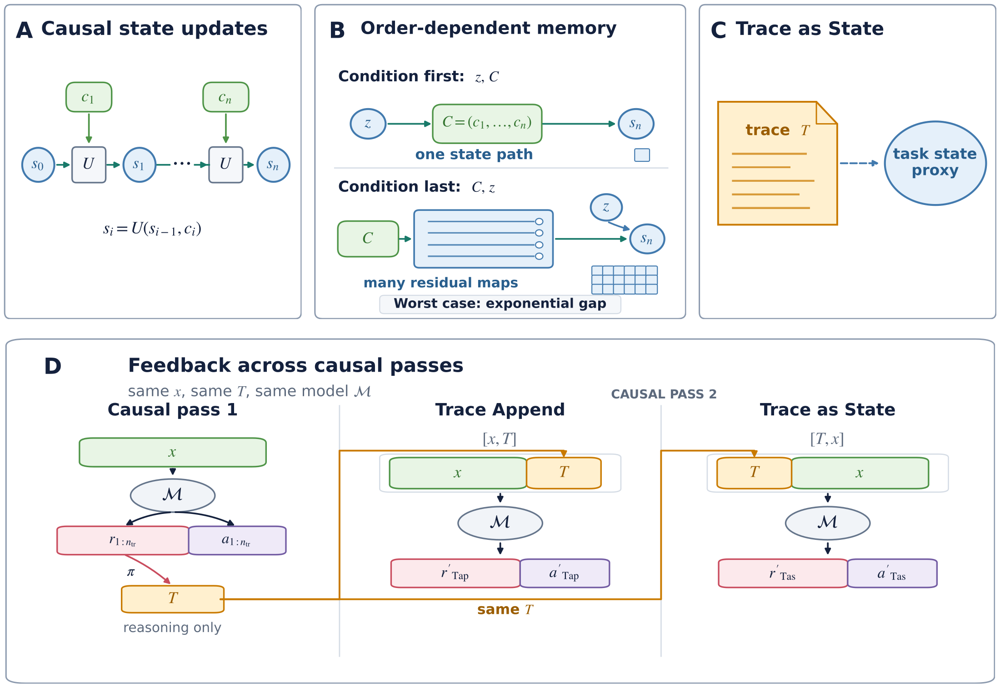
We evaluate this placement intervention on GraphWalks 256K, MRCRv2 8-needle, and NUB-1M using three frontier models from different providers: DeepSeek V4 Pro Preview, GLM-5.2, and Qwen 3.7 Max. Across the 27 reported combinations of model, task, and metric, trace as state outperforms trace append in 26. The result shows that the benefit of using reasoning traces as a task state proxy and placing it before the context is general in long context reasoning, and is consistent with our conditional state update task memory analysis.
我们在 GraphWalks 256K、MRCRv2 8-needle 与 NUB-1M 上，使用来自不同提供商的三个前沿模型（DeepSeek V4 Pro Preview、GLM-5.2 与 Qwen 3.7 Max）评估这一放置干预。在全部 27 个已报告的模型-任务-指标组合中，trace as state 在 26 个上优于 trace append。这一结果表明，把推理痕迹用作任务状态代理并将其放在上下文之前，其收益在长上下文推理中具有普遍性，并且与我们的条件状态更新任务内存分析相一致。
We further test alternative explanations through ablations on GraphWalks 256K using DeepSeek V4 Pro Preview. These controls weaken explanations based solely on generic trace scaffolding or access to first-pass answers and further support the trace as state interpretation.
我们进一步在 GraphWalks 256K 上使用 DeepSeek V4 Pro Preview 开展消融实验，以检验其他可能的解释。这些对照削弱了“仅凭通用痕迹格式”或“获取首遍答案”这类解释，并进一步支持了 trace as state 的解读。
Our contributions are as follows:
我们的贡献如下：
We use a conditional state update abstraction to characterize a worst-case exponential order separation for deterministic processors that read the input once, and apply it as a qualitative principle for causal processing of long contexts.
我们利用条件状态更新抽象，刻画了确定性单遍读取输入的处理器在最坏情况下随输入顺序变化的指数级内存分离，并将其作为长上下文因果处理的一条定性原则。
We introduce trace as state, a general inference scaling method for reasoning over long contexts that feeds reasoning traces back as textual state proxies. The method adds feedback between passes while retaining causal processing within each pass.
我们提出 trace as state——一种面向长上下文推理的通用推理缩放方法，它将推理痕迹作为文本状态代理反馈给模型。该方法在各遍之间引入反馈，同时保留每一遍内部的因果处理。
Across three models and three benchmarks for reasoning over long contexts, trace as state scores above trace append in 26 of 27 reported combinations of model, task, and metric.
在三个模型与三个长上下文推理基准上，trace as state 在 27 个已报告的模型-任务-指标组合中的 26 个上得分高于 trace append。
2 Related Work2 相关工作
Long-context architectures and effective use.长上下文架构及其有效利用。
Sparse, compressed, and hybrid sequence models have extended the nominal context windows of language models (DeepSeek-AI, 2025b; DeepSeek-AI, 2026a; Qwen Team, 2025b; Yang et al., 2025). Long-context evaluations nevertheless show continued sensitivity to evidence position, distractors, and the operations required to combine information across an input (Liu et al., 2024; Kuratov et al., 2024; Hsieh et al., 2024).
稀疏、压缩与混合序列模型扩展了语言模型的标称上下文窗口（DeepSeek-AI, 2025b; DeepSeek-AI, 2026a; Qwen Team, 2025b; Yang et al., 2025）。然而，长上下文评测表明，模型对证据位置、干扰项以及跨输入组合信息所需的运算仍然持续敏感（Liu et al., 2024; Kuratov et al., 2024; Hsieh et al., 2024）。
Causal order in reasoning.推理中的因果顺序。
Under causal attention, a representation at one position can use only information from that position and its prefix. Ok and Lee attribute a large multi-choice prompt-order gap to this constraint and show that repeating the options after the context partially closes the gap (Ok and Lee, 2026). CoRe reduces sensitivity to the order of supporting documents by repeating the full context, whereas Racing Thoughts traces contextualization errors to layerwise race conditions (Yu et al., 2025; Lepori et al., 2025). Collectively, these studies show that input order, repetition, and contextualization can affect model behavior.
在因果注意力下，一个位置的表示只能利用来自该位置及其前缀的信息。Ok 与 Lee 将选择题中较大的提示顺序差距归因于这一约束，并证明在上下文之后重复选项可以部分缩小差距（Ok and Lee, 2026）。CoRe 通过重复完整上下文来降低对支持文档顺序的敏感性；Racing Thoughts 则把情境化错误追溯到逐层的竞争条件（Yu et al., 2025; Lepori et al., 2025）。总体来看，这些研究表明输入顺序、重复与情境化都会影响模型行为。
Architectural recurrence.架构级循环结构。
Iterative language models can revisit hidden representations or partially specified text. Geiping et al. train a language model with recurrent depth that repeatedly applies a shared block at test time (Geiping et al., 2025). Saunshi et al. study Transformer blocks with shared weights, and LoopFormer trains variable loop trajectories for different inference budgets (Saunshi et al., 2025; Jeddi et al., 2026). Masked text-diffusion models such as LLaDA reconstruct masked positions over multiple steps using visible context on both sides (Sahoo et al., 2024; Nie et al., 2025). These approaches expand the design space for iterative computation. However, they can require substantial changes to existing training and inference infrastructure.
迭代式语言模型可以重新访问隐藏表示或部分确定的文本。Geiping 等人训练了具有循环深度的语言模型，在测试时反复应用同一共享模块（Geiping et al., 2025）。Saunshi 等人研究了权重共享的 Transformer 模块，LoopFormer 则针对不同推理预算训练可变的循环轨迹（Saunshi et al., 2025; Jeddi et al., 2026）。以 LLaDA 为代表的掩码文本扩散模型利用两侧可见上下文，分多个步骤重建被掩码的位置（Sahoo et al., 2024; Nie et al., 2025）。这些方法扩展了迭代计算的设计空间，但可能需要对现有训练与推理基础设施进行大幅改动。
Rereading and textual feedback.重读与文本反馈。
Several methods revisit task information or carry textual state forward during inference. Re2 repeats the question within one prompt and provides a direct rereading baseline without prior reasoning text (Xu et al., 2024). The Markovian Thinker carries a bounded text history across reset reasoning chunks, while ReContext recursively builds and replays an evidence pool for the current query (Aghajohari et al., 2026; Zhao et al., 2026). These methods show that feeding task-relevant text back to a model can improve reasoning.
已有若干方法在推理过程中重新审视任务信息，或将文本状态向前传递。Re2 在同一个提示内重复问题，提供了一个不含先前推理文本的直接重读基线（Xu et al., 2024）。The Markovian Thinker 在重置的推理块之间携带有限的文本历史；ReContext 则为当前查询递归地构建并回放证据池（Aghajohari et al., 2026; Zhao et al., 2026）。这些方法表明，把任务相关文本反馈给模型可以改善推理。
Reasoning traces as state.作为状态的推理痕迹。
Reasoning traces can serve not only as explanations, but also as textual records of an evolving computational state. Hao et al. show that synthetic hints inserted into a reasoning trace can affect later outputs even when follow-up explanations do not acknowledge their influence (Hao et al., 2026). The State over Tokens preprint describes the growing reasoning prefix as externalized computational state, whereas causal mediation evidence suggests that models do not reliably use their stated intermediate steps (Levy et al., 2025; Paul et al., 2024). Taken together, the evidence shows that reasoning traces can carry task-relevant information and affect later outputs.
推理痕迹不仅可以充当解释，还可以作为不断演化的计算状态的文本记录。Hao 等人表明，插入推理痕迹的合成提示可以影响后续输出，即使后续解释并未承认其影响（Hao et al., 2026）。State over Tokens 预印本将不断增长的推理前缀描述为外置的计算状态；而因果中介分析的证据则表明，模型并不总是可靠地使用其声称的中间步骤（Levy et al., 2025; Paul et al., 2024）。综合来看，这些证据表明推理痕迹能够携带任务相关信息并影响后续输出。
3 Methodology3 方法
Textual reasoning typically follows a causal order, which is well matched by causal transformers. Yet some reasoning depends on task states whose values become known only later, creating a mismatch especially consequential in long contexts. We formalize this mismatch using causal state update systems and conditional state update tasks and introduce trace as state.
文本推理通常遵循因果顺序，这与因果 Transformer 的特性相匹配。然而，某些推理依赖于其取值较晚才确定的任务状态，由此产生的错配在长上下文中影响尤为重大。我们用因果状态更新系统与条件状态更新任务对这一错配进行形式化，并据此提出 trace as state。
Table 1: Vital Notations.表 1：主要符号。
| Symbol 符号 | ', 'Meaning (EN) | ', '含义（中） | ']
|---|---|---|
| cᵢ, C | The i-th information unit and the ordered sequence C = (c₁, …, cₙ). | 第 i 个信息单元，以及有序序列 C = (c₁, …, cₙ)。 |
| sᵢ, 𝒮, b | The task state after cᵢ, its finite state space, and the log size of the state space. | 处理 cᵢ 之后的任务状态、其有限状态空间，以及状态空间的对数尺寸。 |
| U | The causal state update rule. | 因果状态更新规则。 |
| z | The condition used as the initial task state s₀. | 用作初始任务状态 s₀ 的条件。 |
| x, ℳ | The long context and the causal reasoning model. | 长上下文与因果推理模型。 |
| rⱼ, aⱼ, n_tr | The reasoning trace, visible answer, and number of source model runs. | 推理痕迹、可见答案，以及源模型运行次数。 |
| π, T | The trace serializer and the resulting serialized trace. | 痕迹序列化器与序列化后得到的痕迹。 |
Table 1 summarizes the vital notation used in this section.
表 1 概括了本节使用的主要符号。
3.1 Causal State Updates and Order-Dependent Memory3.1 因果状态更新与依赖顺序的内存
Causal state updates.因果状态更新。
We define a causal state update processor as a processor that reads each input unit once in its presented order and updates its persistent working memory using only its current memory and the newly received unit.
我们将因果状态更新处理器定义为：按呈现顺序对每个输入单元只读取一次、且仅使用当前内存与新收到的输入单元来更新其持久工作内存的处理器。
Let C = (c₁, …, cₙ) be an ordered sequence of n information units, with cᵢ denoting the i-th unit. As shown in Figure 1A, a causal state update processor carries a task state sᵢ in a finite state space 𝒮. After reading cᵢ, it applies a fixed update rule U:
设 C = (c₁, …, cₙ) 为 n 个信息单元构成的有序序列，其中 cᵢ 表示第 i 个单元。如图 1A 所示，因果状态更新处理器在有限状态空间 𝒮 中携带任务状态 sᵢ。读完 cᵢ 后，它应用固定的更新规则 U：
sᵢ = U(sᵢ₋₁, cᵢ), i = 1, …, n.(1)The state sᵢ is the task state the processor reached after processing c₁, …, cᵢ. When the initial state s₀ is fixed, the processor follows one realized state path through the sequence.
状态 sᵢ 是处理器处理 c₁, …, cᵢ 之后到达的任务状态。当初始状态 s₀ 固定时，处理器沿该序列走出一条已实现的状态路径。
Conditional state update tasks and order-dependent memory.条件状态更新任务与依赖顺序的内存。
Consider a variant of the causal state update process in which the initial state is supplied by a task condition rather than being fixed. Let z ∈ 𝒮 denote this condition. We call the resulting problem a conditional state update task: the processor sets s₀ = z, applies Equation 1 to C, and returns sₙ.
考虑因果状态更新过程的一个变体：初始状态不由系统固定，而是由一个任务条件给出。设 z ∈ 𝒮 表示该条件。我们把由此得到的问题称为条件状态更新任务：处理器令 s₀ = z，对 C 应用公式 (1)，并返回 sₙ。
Figure 1B compares two orders for the same condition and information sequence. In the condition first order [z, C], the processor receives z before c₁, …, cₙ (n is the length of the information sequence) and therefore knows which state path to update. In the condition last order [C, z], it reads the complete sequence before learning which initial state should be propagated through it.
图 1B 比较了相同条件与信息序列下的两种顺序。在条件在先顺序 [z, C] 中，处理器先收到 z、再收到 c₁, …, cₙ（n 为信息序列长度），因此知道要更新哪条状态路径。在条件在后顺序 [C, z] 中，它先读完整个序列，然后才知道应该沿序列传播哪个初始状态。
To compare their working memory, consider a causal state update processor that knows exactly the state update rule U. With [z, C], the processor only needs to store the current sᵢ, so ⌈b⌉ bits suffice, where b = log₂|𝒮|.
为比较二者所需的工作内存，考虑一个确切知道状态更新规则 U 的因果状态更新处理器。在 [z, C] 下，处理器只需存储当前的 sᵢ，因此 ⌈b⌉ 比特即可，其中 b = log₂|𝒮|。
With [C, z], the processor has not selected a state path when it finishes reading C. Each possible sequence determines a complete response profile: for every z ∈ 𝒮, the profile specifies the resulting sₙ. The processor must retain a different configuration for every distinct response profile induced by the valid sequences.
而在 [C, z] 下，处理器读完 C 时还没有选定状态路径。每个可能的序列都决定一个完整的响应概貌（response profile）：对每个 z ∈ 𝒮，概貌都给出相应的 sₙ。处理器必须为有效序列所诱导的每一种不同响应概貌保留一个不同的内部配置。
There are |𝒮|^|𝒮| possible functions from 𝒮 to itself. In the worst case, [C, z] requires at least
从 𝒮 映到其自身的函数共有 |𝒮|^|𝒮| 个。在最坏情况下，[C, z] 至少需要
⌈log₂|𝒮|^|𝒮|⌉ = ⌈|𝒮|·log₂|𝒮|⌉ = ⌈b·2^b⌉(2)bits, whereas [z, C] requires only ⌈b⌉ bits. In the worst-case scenario, the memory requirement is exponentially larger in the condition last setting than in the condition first setting.
比特，而 [z, C] 只需要 ⌈b⌉ 比特。在最坏情形下，条件在后设置的内存需求比条件在前设置大指数倍。
We could derive an ordering principle: a task condition could be much easier to use when it is available before the information whose processing it guides.
由此可以导出一条排序原则：当条件在其所引导处理的信息之前可得时，该条件使用起来会容易得多。
3.2 Reasoning Traces as a Textual State Proxy3.2 作为文本状态代理的推理痕迹
Although transformers may retain per-token kv caches, causal transformers with finite context length and finite precision are causal state update models as the their max memory are bounded. Conditional state update tasks are not literal models of real world long context tasks. Instead, the results in section 3.1 motivate us to test placing task relevant state before the context on a later pass.
尽管 Transformer 可能保留逐 token 的 KV 缓存，但具有有限上下文长度与有限精度的因果 Transformer，其最大内存是有界的，因此仍属于因果状态更新模型。条件状态更新任务并非对真实世界长上下文任务的字面建模；更确切地说，3.1 节的结论促使我们检验：在随后的一遍处理中，把任务相关状态放在上下文之前是否有效。
The formal condition z represents task state that is already available to the processor. In a long context reasoning problem, however, useful task state may be discovered only while the model is reasoning after reading the context. A reasoning trace may record useful task states like an active target, a resolved reference or a search frontier.
形式化条件 z 代表处理器已经拥有的任务状态。然而在长上下文推理问题中，有用的任务状态可能要等到模型读完上下文并展开推理时才被发现。推理痕迹可以记录诸如当前目标、已消解的指代或搜索前沿之类的有用任务状态。
We view reasoning traces as an observable textual proxy for task state, as illustrated in figure 1C. The proxy may be incomplete, lossy, or incorrect. We therefore do not identify a trace with the formal condition z or with a privileged internal model state. The connection is functional: if the trace contains useful state information, placing it before the context can make that information available while the context is processed again.
如图 1C 所示，我们将推理痕迹视为任务状态的一种可观测文本代理。该代理可能不完整、有损或不正确。因此，我们并不把痕迹等同于形式化条件 z，也不把它等同于某种特权内部模型状态。二者的联系是功能性的：如果痕迹包含有用的状态信息，把它放在上下文之前，就能在上下文被再次处理时使这些信息可用。
Let ℳ be a causal state update model and let x denote the long context. We run ℳ n_tr times on the same problem. Each run j produces a reasoning trace rⱼ and a separate visible answer aⱼ:
设 ℳ 为一个因果状态更新模型，x 表示长上下文。我们在同一问题上运行 ℳ 共 n_tr 次。第 j 次运行产生一条推理痕迹 rⱼ 和一个单独的可见答案 aⱼ：
(rⱼ, aⱼ) ∼ ℳ(· | x), j = 1, …, n_tr.(3)For each task, a serializer π held fixed across the placement conditions constructs the serialized trace
对每个任务，由一个在所有放置条件之间保持固定的序列化器 π 构造序列化痕迹
T = π(r₁, …, r_n_tr).(4)The serializer preserves the included reasoning text in source order and adds fixed labels and delimiters. We use T as the textual state proxy to be tested.
序列化器按来源顺序保留所纳入的推理文本，并添加固定的标签与定界符。我们用 T 作为待检验的文本状态代理。
3.3 Trace as state.3.3 Trace as state 方法。
Figure 1D shows the complete procedure. Based on theoretical analysis from section 3.1, we introduce trace as state, a method that places the textual state proxy T before the long context x. Therefore, in trace as state, a fresh causal pass receives [T, x] to generate the answer again. We compare trace as state with trace append, the method that maintains the original order of x and T and sends the model [x, T] on a second pass.
图 1D 展示了完整流程。基于 3.1 节的理论分析，我们提出 trace as state：把文本状态代理 T 放在长上下文 x 之前。于是在 trace as state 中，一次全新的因果遍历接收 [T, x] 并重新生成答案。我们将其与 trace append 比较；后者保持 x 与 T 的原始顺序，在第二遍处理中把 [x, T] 发给模型。
Let r′ and a′ denote the reasoning trace and visible answer produced in this pass:
设 r′ 与 a′ 表示该遍产生的推理痕迹与可见答案：
(r′_Tap, a′_Tap) ∼ ℳ(· | [x, T]), (r′_Tas, a′_Tas) ∼ ℳ(· | [T, x]).(5)trace as state and trace append use the same long context x and the same textual task state proxy T, with order as the only difference. With trace as state, T is available while the model processes x again. With trace append, T arrives after x and cannot change representations already formed for the preceding context tokens, although it can still influence subsequent reasoning and the visible answer. The comparison therefore tests whether the same T is more useful during rereading than after the long context has already been processed.
trace as state 与 trace append 使用相同的长上下文 x 和相同的文本任务状态代理 T，唯一差异是顺序。在 trace as state 下，模型再次处理 x 时 T 已经可用；在 trace append 下，T 在 x 之后才出现，虽然仍能影响后续推理与可见答案，但无法改变已为前面上下文 token 形成的表示。因此，这一比较检验的是：同一个 T，是在重读过程中更有用，还是在长上下文已被处理完之后才有用。
4 Experiments4 实验
4.1 Setup4.1 实验设置
In this section, we evaluate trace as state and its matched placement control trace append on long context tasks from different domains. The models come from different providers and have different disclosed architectural designs. A fixed serializer preserves the reasoning traces while adding only necessary delimiters such as "<trace_start>" and "<trace_end>" and brief introductory text to construct T. Some traces are so long that we truncate them to the first 50,000 characters to keep the second-pass prompt within the model's context capacity. These choices define the realization evaluated here; the general trace as state framework also permits adapted models, serializers, or state interfaces while retaining causal processing within each pass.
本节在不同领域的长上下文任务上评估 trace as state 及其匹配的位置对照 trace append。所用模型来自不同提供商，公开的架构设计各不相同。我们使用固定的序列化器保留推理痕迹，仅添加必要的定界符（如 "<trace_start>" 与 "<trace_end>"）和简短的引导文本来构造 T。部分痕迹过长，我们将其截断为前 50,000 字符，以保证第二遍提示不超过模型的上下文容量。这些选择共同定义了本文评估的具体实现；通用的 trace as state 框架同样允许更换适配的模型、序列化器或状态接口，同时保留每一遍内部的因果处理。
Models.模型。
We evaluate Qwen 3.7 Max, DeepSeek V4 Pro Preview, and GLM-5.2. All three are frontier long-context reasoning models that expose reasoning traces that can be logged and supplied back to the model as an imperfect textual proxy that may carry task-state information. They also represent different providers and disclosed long-context designs: DeepSeek V4 Pro Preview uses a hybrid attention stack with Compressed Sparse Attention (CSA), Heavily Compressed Attention (HCA), and Manifold-Constrained Hyper-Connections (mHC) (DeepSeek-AI, 2026a); Qwen 3.7 Max is formed with Gated Deltanet (GDN) and Gated Attention (GA) (Yang et al., 2025; Qiu et al., 2025); and GLM-5.2 is a 1M-token MoE model with DeepSeek Sparse Attention (DSA) optimized by IndexCache (IC), which reuses sparse-attention indices across layers (DeepSeek-AI, 2025b; Bai et al., 2026; GLM-5 Team, 2026; Z.ai, 2026a; Z.ai, 2026b). We choose the highest available reasoning effort in our experiments: max for DeepSeek V4 Pro and GLM-5.2. For Qwen 3.7 Max, we use the official xhigh system prompt. All three support approximately one-million-token inputs in the evaluated interfaces and expose the reasoning traces required by the frozen textual realization evaluated here (Alibaba Cloud, 2026; DeepSeek-AI, 2026b; Z.ai, 2026b).
我们评估 Qwen 3.7 Max、DeepSeek V4 Pro Preview 与 GLM-5.2。三者都是前沿长上下文推理模型，均暴露可记录的推理痕迹，这些痕迹可作为可能携带任务状态信息的不完美文本代理回供给模型。它们也代表不同的提供商与公开的长上下文设计：DeepSeek V4 Pro Preview 采用混合注意力栈，包含压缩稀疏注意力（CSA）、强压缩注意力（HCA）与流形约束超连接（mHC）（DeepSeek-AI, 2026a）；Qwen 3.7 Max 由门控 DeltaNet（GDN）与门控注意力（GA）构成（Yang et al., 2025; Qiu et al., 2025）；GLM-5.2 是百万 token 级 MoE 模型，采用 DeepSeek 稀疏注意力（DSA），并通过 IndexCache（IC）跨层复用稀疏注意力索引（DeepSeek-AI, 2025b; Bai et al., 2026; GLM-5 Team, 2026; Z.ai, 2026a; Z.ai, 2026b）。实验中我们选择各自可用的最高推理努力：DeepSeek V4 Pro 与 GLM-5.2 用 max；Qwen 3.7 Max 使用官方 xhigh 系统提示。在被评估的接口下，三者都支持约百万 token 的输入，并暴露本文所冻结文本实现所需的推理痕迹（Alibaba Cloud, 2026; DeepSeek-AI, 2026b; Z.ai, 2026b）。
Details of the models are described in Table 1-1.
模型详情见表 1-1。
Table 1-1: Model configuration and token budgets used in the experiments. (a: Architecture. b: Via xhigh prompt.)表 1-1：实验使用的模型配置与 token 预算。（a：架构。b：通过 xhigh 提示实现。）
| 项目 | ', 'Qwen 3.7 Max | ', 'DeepSeek V4 Pro Preview | ', 'GLM-5.2 | ']
|---|---|---|---|
| 架构 Arch.ᵃ | GDN+GA | CSA+HCA + mHC | DSA+IC |
| 输入预算 | 983,616 | 1,048,576 | 1,048,576 |
| 输出预算 | 65,536 | 131,072 | 65,536 |
| 推理努力 | xhighb | max | max |
Datasets.数据集。
We use GraphWalks (OpenAI, 2025a), MRCRv2 8-needle (OpenAI, 2025b; Vodrahalli et al., 2024), and 1M-Novel Understanding Bench (NUB-1M) (xz-keg, 2026) for our evaluation. GraphWalks requires the model to maintain graph state over a long edge list; MRCRv2 asks the model to bind a final request to the correct earlier request-response instance. Both provide multiple prompt-length bins. As different models use different tokenizers, many problems in the 1M bin cannot be fairly tested due to overlength. We therefore choose the longest bins under 1M: The 256K bin for GraphWalks and the 256K and 512K bins for MRCRv2. This choice also leaves room for additional trace as state and trace append texts.
评估使用 GraphWalks（OpenAI, 2025a）、MRCRv2 8-needle（OpenAI, 2025b; Vodrahalli et al., 2024）与 1M-Novel Understanding Bench（NUB-1M）（xz-keg, 2026）。GraphWalks 要求模型在长边列表上维护图状态；MRCRv2 要求模型把最终请求绑定到正确的更早请求-响应实例。两者都提供多个提示长度档。由于不同模型使用不同的分词器，1M 档中许多题目会因超长而无法公平测试。因此我们选择 1M 以下最长的档位：GraphWalks 用 256K 档，MRCRv2 用 256K 与 512K 档。这一选择也为附加的 trace as state 与 trace append 文本留出了空间。
NUB-1M is a long novel reading comprehension benchmark with complex questions about a new novel containing 400–700K tokens. The dataset is updated by season to reduce leakage risk. For each season, the problems and answers are manually maintained. We use the season 2 novel for evaluation and report average accuracy of the 20 problems over 5 repeats.
NUB-1M 是一个长篇小说阅读理解基准，针对一部含 40 万至 70 万 token 的新小说提出复杂问题。为降低泄露风险，该数据集按季更新；每季的题目与答案均由人工维护。我们使用第 2 季小说进行评估，报告 20 道题在 5 次重复上的平均准确率。
Models may not behave as intended unless the question appears at the end of the prompt. We therefore separate the question from the long context and place it at the end of every input to ensure models behave well focused on the given tasks. The literal orders are therefore trace as state [T, x, q] and trace append [x, T, q], where x is the long context and q is the question.
如果问题不出现在提示末尾，模型的行为可能不符合预期。因此我们把问题与长上下文分开，将问题放在每个输入的末尾，以确保模型聚焦于给定任务。于是字面顺序为：trace as state 为 [T, x, q]，trace append 为 [x, T, q]，其中 x 为长上下文，q 为问题。
Details of the datasets are listed in Table 1-2.
数据集详情见表 1-2。
Table 1-2: Datasets and scoring used in the experiments. (a: Exact Match. b: SequenceMatcher ratio. c: Accuracy.)表 1-2：实验使用的数据集与评分方式。（a：精确匹配。b：SequenceMatcher 比例。c：准确率。）
| 项目 | ', 'GraphWalks | ', 'MRCRv2 | ', 'NUB-1M | ']
|---|---|---|---|
| 子集 Subsets | 256K | 256K,512K 8-needle | Season 2 |
| 题目数 | 200 | 200 | 20 |
| 重复 | 5 | 5 | 5 |
| 评分 | EMa, set F1 | EM, Seq.b | Acc.c |
For each model and task, we compare a single-pass baseline ℳ([x, q]) with two trace-backed conditions trace as state, ℳ([T, x, q]) and trace append ℳ([x, T, q]) that reuse the model's own first-pass reasoning traces. Appendix C gives the trace serialization and dataset-specific insertion boundaries.
对每个模型与任务，我们比较单遍基线 ℳ([x, q]) 与两个带回灌痕迹的条件：复用模型自身首遍推理痕迹的 trace as state（ℳ([T, x, q])）与 trace append（ℳ([x, T, q])）。附录 C 给出痕迹序列化方式与各数据集的具体插入边界。
We evaluate each problem with 5 repeats and include all 5 reasoning traces in the second-pass trace as state and trace append prompts. We use the official provider for these models, Aliyun Bailian for Qwen 3.7 Max (Alibaba Cloud, 2026), DeepSeek for DeepSeek V4 Pro (DeepSeek-AI, 2026b), and Bigmodel for GLM-5.2 (Z.ai, 2026b). We do not explicitly pass a custom maximum-output value. The run records therefore establish that no client-side cap was requested, but not the effective provider default, which may also change over time.
每道题评估 5 次，并把全部 5 条推理痕迹纳入第二遍 trace as state 与 trace append 的提示。模型均使用官方提供商：Qwen 3.7 Max 用阿里云百炼（Alibaba Cloud, 2026），DeepSeek V4 Pro 用 DeepSeek（DeepSeek-AI, 2026b），GLM-5.2 用 Bigmodel（Z.ai, 2026b）。我们没有显式传入自定义的最大输出值。因此运行记录只能证明客户端未请求输出上限，不能证明提供商实际生效的默认上限；后者也可能随时间变化。
Our evaluations use EM and set F1 for GraphWalks, EM and SequenceMatcher ratio for MRCRv2 8-needle, and DeepSeek V4 Pro model-judged accuracy for NUB-1M. Blocked, overlong, malformed, missing, nonterminal, or content-filtered cases are scored as failures.
评估中，GraphWalks 使用 EM 与集合 F1；MRCRv2 8-needle 使用 EM 与 SequenceMatcher 比例；NUB-1M 使用 DeepSeek V4 Pro 模型评判的准确率。被拦截、超长、格式错误、缺失、非终止或被内容过滤的情形一律计为失败。
Some first pass reasoning traces are very long, we therefore truncate each reused trace to its first 50,000 characters to avoid input overlength.
部分首遍推理痕迹非常长，因此我们把每条被复用的痕迹截断为其前 50,000 字符，以避免输入超长。
4.2 Main Results4.2 主要结果
Table 2: Long-context results for first pass, trace as state and trace append. Scores are percentages averaged over 5 repeats; higher is better. The best score within each model-metric column is bolded.表 2：首遍（first pass）、trace as state 与 trace append 的长上下文结果。分数为 5 次重复的平均百分比，越高越好。每个模型-指标列中的最优分数以粗体标出。
| 模型 Model | 条件 Condition | GraphWalks 256K | MRCRv2 8-needle | NUB-1M Acc. | ||||||
|---|---|---|---|---|---|---|---|---|---|---|
| BFS | Parents | 256K | 512K | |||||||
| EM | F1 | EM | F1 | EM | Seq. | EM | Seq. | |||
| DeepSeek V4 Pro Preview | First Pass | 31.6 | 36.4 | 29.2 | 46.5 | 53.8 | 78.5 | 45.4 | 63.6 | 60.0 |
| trace append | 41.8 | 48.3 | 43.0 | 65.3 | 66.6 | 79.6 | 49.4 | 66.9 | 71.0 | |
| trace as state | 58.8 | 65.9 | 81.8 | 91.3 | 76.8 | 88.7 | 52.6 | 73.3 | 73.0 | |
| Qwen 3.7 Max | First Pass | 60.0 | 68.1 | 60.8 | 87.2 | 79.8 | 83.1 | 36.2 | 43.7 | 37.0 |
| trace append | 60.4 | 70.4 | 71.0 | 91.7 | 84.0 | 87.1 | 40.4 | 47.4 | 49.0 | |
| trace as state | 63.8 | 71.7 | 96.4 | 99.1 | 88.4 | 91.3 | 46.8 | 52.5 | 51.0 | |
| GLM-5.2 | First Pass | 55.8 | 70.7 | 66.4 | 88.5 | 40.2 | 48.2 | 42.6 | 52.0 | 43.0 |
| trace append | 60.0 | 75.8 | 83.2 | 92.7 | 40.0 | 58.3 | 44.6 | 59.9 | 65.0 | |
| trace as state | 63.4 | 75.0 | 100.0 | 100.0 | 61.2 | 71.9 | 55.4 | 70.1 | 66.0 | |
Table 2 displays the main experimental results. Across all 27 reported combinations of model, task, and metric, trace as state scores higher than trace append in 26. DeepSeek V4 Pro and Qwen 3.7 Max favor trace as state on every reported dataset, task and metric. GLM-5.2 follows the same pattern except on GraphWalks BFS F1, where trace append is 0.8 points higher while trace as state has higher exact match. trace as state also scores above the first pass in all reported evaluations.
表 2 展示了主要实验结果。在全部 27 个已报告的模型-任务-指标组合中，trace as state 在 26 个上的得分高于 trace append。DeepSeek V4 Pro 与 Qwen 3.7 Max 在所有已报告的数据集、任务与指标上都偏好 trace as state。GLM-5.2 也遵循同样的模式，唯一例外是 GraphWalks BFS F1：trace append 高 0.8 分，而 trace as state 的精确匹配率更高。此外，在所有已报告的评估中，trace as state 的得分也都高于首遍。
trace append improves over the first pass in many settings, showing that the trace text can carry useful information in these settings. The additional advantage of trace as state is consistent with the hypothesis that placing reasoning traces as an imperfect textual task state proxy before the context is beneficial when the model processes the context again.
trace append 在许多设置下优于首遍，说明痕迹文本在这些设置中确实能携带有用信息。trace as state 的额外优势则与以下假设一致：当模型再次处理上下文时，把推理痕迹作为一种不完美的文本任务状态代理放在上下文之前是有益的。
The strongest gains occur on GraphWalks Parents, where success requires the model to maintain predecessor state while interpreting the graph. DeepSeek V4 Pro improves from 46.5 to 91.3 F1, or 29.2 to 81.8 EM, and Qwen 3.7 Max improves from 87.2 to 99.1 F1, or 60.8 to 96.4 EM. GLM-5.2 reaches 100.0 EM and F1 on Parents under trace as state. MRCRv2 retrieval and binding comparisons show the same ordering advantage. NUB-1M runs provide supporting evidence in the same direction for detailed long-novel reading comprehension.
最强增益出现在 GraphWalks Parents 上：该任务要求模型在解读图结构的同时维护前驱状态。DeepSeek V4 Pro 的 F1 从 46.5 提升到 91.3，EM 从 29.2 提升到 81.8；Qwen 3.7 Max 的 F1 从 87.2 提升到 99.1，EM 从 60.8 提升到 96.4；GLM-5.2 在 trace as state 下于 Parents 上达到 100.0 的 EM 与 F1。MRCRv2 的检索与绑定比较呈现同样的顺序优势；NUB-1M 的运行结果也在同一方向上为精细的长篇小说阅读理解提供了支持证据。
4.3 Context Order Ablations4.3 上下文顺序消融
We next compare trace as state with controls that vary how different context are placed and first-pass outputs are reused on DeepSeek V4 Pro GraphWalks 256K in table 3. We test several ablations to examine how models behave under different trace placements and feedback controls. For each ablation, the table labels the prompt format and reports the exact match (EM) and F1 score. We also include Majority@5 and Oracle@5 for the first pass in the table. Majority@5 evaluates the major choices of the 5 first pass answers, while Oracle@5 evaluates the best answer among the 5 answers.
接下来在 DeepSeek V4 Pro 的 GraphWalks 256K 上，我们将 trace as state 与改变上下文放置方式及首遍输出复用方式的对照进行比较（表 3）。我们测试了若干消融设置，以考察模型在不同痕迹放置与反馈控制下的行为。表中为每个消融标注提示格式，并报告精确匹配（EM）与 F1 分数。表中还包含首遍的 Majority@5 与 Oracle@5：前者评估 5 个首遍答案中的多数选择，后者评估 5 个答案中的最优者。
Table 3: DeepSeek V4 Pro Preview performance on GraphWalks 256K under different prompt conditions. Scores are percentages averaged over 5 repeats. The best scores for each subtask/metric are bolded.表 3：DeepSeek V4 Pro Preview 在 GraphWalks 256K 上不同提示条件下的表现。分数为 5 次重复的平均百分比。每个子任务/指标的最优分数以粗体标出。
| 消融条件 Condition | 提示格式 Prompt | BFS | Parents | ||
|---|---|---|---|---|---|
| EM | F1 | EM | F1 | ||
| First pass 首遍 | [x,q] | 31.6 | 36.4 | 29.2 | 46.5 |
| Majority@5 | — | 35.0 | 39.6 | 31.0 | 47.8 |
| Oracle@5 | — | 50.0 | 55.5 | 50.0 | 75.0 |
| Question First 问题前置 | [q,x,q] | 33.4 | 36.8 | 53.0 | 64.6 |
| Re2 | [x,q,x,q] | 49.0 | 52.9 | 50.0 | 68.9 |
| Answer Feedback 答案反馈 | [a,x,q] | 35.4 | 39.4 | 45.4 | 58.0 |
| Random Trace 随机痕迹 | [Trand,x,q] | 22.4 | 35.9 | 14.2 | 31.3 |
| Trace Only 仅痕迹 | [T,q] | 46.2 | 52.7 | 43.8 | 67.3 |
| trace append | [x,T,q] | 41.8 | 48.3 | 43.0 | 65.3 |
| trace as state | [T,x,q] | 58.8 | 65.9 | 81.8 | 91.3 |
Question First puts the question q before the task. It substantially improves performance on Parents but remains similar to the first pass baseline on BFS, implying that the question itself may be a vital task state for some tasks.
Question First 把问题 q 放在任务之前。它在 Parents 上显著提升性能，但在 BFS 上与首遍基线相近，这说明问题本身对某些任务而言可能是关键的任务状态。
Re2 (Xu et al., 2024) improves substantially over the first pass, showing that rereading is useful on these long context tasks. However, it remains below trace as state, especially on Parents. In this evaluated setting, the comparison is consistent with T carrying task-relevant information beyond that supplied by prompt repetition alone.
Re2（Xu et al., 2024）大幅优于首遍，说明重读在这些长上下文任务上是有用的。但它仍低于 trace as state，在 Parents 上尤其明显。在本文评估的设置中，这一比较与如下判断一致：T 所携带的任务相关信息，超出了单纯重复提示所能提供的部分。
Answer Feedback places the first pass answers a = [a₁, …, a_n_tr] before the original prompt. It improves over the first pass but remains far below trace as state. This supports the interpretation that serialized reasoning text can serve as a more useful task state proxy than the answers or the questions alone.
Answer Feedback 把首遍答案 a = [a₁, …, a_n_tr] 放在原始提示之前。它优于首遍，但仍远低于 trace as state。这支持了如下解读：序列化的推理文本可以充当比答案或问题本身更有用的任务状态代理。
Random Trace replaces the prefix with traces sampled from other problems in the same GraphWalks subtask. It performs worse than the no-trace first pass, much worse than trace as state. So the gain of trace as state is not due to a generic formatting effect, and a reasoning-trace-like scaffold alone is insufficient without problem-specific, task-relevant information from reasoning traces of the same problem.
Random Trace 用从同一 GraphWalks 子任务其他题目中抽取的痕迹替换前缀。它的表现比无痕迹的首遍更差，也远差于 trace as state。因此 trace as state 的增益并非来自通用格式效应；只有形似推理痕迹的脚手架、而没有来自同一题目的特定于该问题的任务相关信息，是不够的。
All above controls above place a copy of the long context late in the prompt but remain below trace as state, signifying that textual recency alone does not explain the observed trace as state gains.
上述所有对照都在提示中较晚的位置放置了长上下文副本，但仍低于 trace as state。这表明仅靠文本的近因性不足以解释所观察到的 trace as state 增益。
Trace Only sends the first-pass reasoning traces without the original long context prompt. Its performance is similar to trace append, showing that the traces contain useful answer-relevant information. Nevertheless, it remains well below trace as state, showing that the original input is still useful when placed after the first pass traces. Trace as State also outperforms Oracle@5, showing that the feedback pass improves on what can be obtained by retrospectively selecting the best of the five first pass outputs.
Trace Only 只发送首遍推理痕迹而不发送原始长上下文提示。它的表现与 trace append 相近，说明痕迹包含与答案相关的有用信息；但它仍远低于 trace as state，说明把原始输入放在首遍痕迹之后依然有用。Trace as State 还优于 Oracle@5，说明反馈遍的结果超过了事后挑选 5 个首遍输出中最优者所能获得的水平。
4.4 Trace Count Ablation4.4 痕迹数量消融
Finally, we rerun DeepSeek V4 Pro Preview on the GraphWalks 256K while varying the number of reused first-pass traces from n_tr = 1 to n_tr = 5. The block for each count contains the first n_tr eligible traces in repeat order, so successive settings are nested. For every n_tr ≥ 1, trace as state and trace append receive the same realized T, and each condition averages five fresh second-pass repeats per problem. The n_tr = 0 point is the common five-repeat first-pass mean.
最后，我们在 GraphWalks 256K 上重跑 DeepSeek V4 Pro Preview，把复用的首遍痕迹数量从 n_tr = 1 变化到 n_tr = 5。每个数量的痕迹块按重复顺序取前 n_tr 条合格痕迹，因此各设置是嵌套的。对每个 n_tr ≥ 1，trace as state 与 trace append 接收相同的已实现 T，且每个条件对每道题平均 5 次全新的第二遍重复。n_tr = 0 的点是共用的 5 次重复首遍均值。
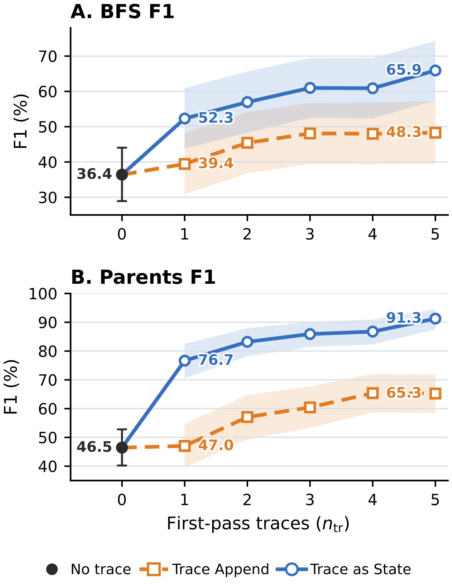
Figure 2 shows that performance generally rises as additional traces are included, and trace as state remains above trace append for every n_tr ≥ 1. Within this frozen-model realization, the result supports trace count as an inference-scaling parameter and shows that the measured trace as state–trace append ordering persists from n_tr = 1 through n_tr = 5.
图 2 显示，随着纳入更多痕迹，性能总体上升，且对每个 n_tr ≥ 1，trace as state 都保持在 trace append 之上。在这一冻结模型的具体实现中，该结果支持把痕迹数量作为推理缩放参数，并表明所测得的 trace as state 对 trace append 的优势顺序从 n_tr = 1 到 n_tr = 5 持续成立。
5 Conclusion5 结论
We introduced trace as state, an inference approach that reuses task state information carried in reasoning traces as a textual proxy on a fresh pass over a long context task. Its motivation comes from theoretical analysis of conditional state update tasks: for causal state update processors, a condition available before an information sequence can guide a single evolving state, while a late condition can require retaining much more memory about potential conditions of the sequence.
我们提出了 trace as state——一种推理方法，它在长上下文任务的全新一遍处理中，把推理痕迹所携带的任务状态信息作为文本代理加以复用。其动机来自对条件状态更新任务的理论分析：对因果状态更新处理器而言，在信息序列之前可得的条件可以引导单一的演化状态；而迟到的条件则可能需要为序列的各种潜在条件保留多得多的内存。
trace as state applies this ordering principle by making prior reasoning available before the long context block is processed again. Together, the formal analysis and experiments support a simple view: reasoning traces can carry forward task state information, and the point at which that information becomes available can shape how useful it is.
trace as state 通过在长上下文块被再次处理之前让先前推理可用的方式，应用了这一排序原则。形式化分析与实验共同支持一个简单观点：推理痕迹可以向前携带任务状态信息，而该信息在何时变得可用，会影响其有用程度。
This view suggests several direct extensions: selecting or compressing traces, learning better textual state interfaces, and optimizing where feedback is placed. A broader training framework could jointly learn the model and the feedback interface while retaining causal processing within each pass.
这一观点引出若干直接的扩展方向：痕迹的选择或压缩、学习更好的文本状态接口，以及优化反馈放置的位置。更完整的训练框架可以在保留每一遍内部因果处理的同时，联合学习模型与反馈接口。
Limitations局限性
Our experiments realize cross-pass state feedback through model-generated text. This evaluated realization requires access to raw reasoning traces or another exposed state interface. The requirement comes from the interface used in our experiments. The general cross-pass design can instead use any accessible state interface. Models or APIs that expose only final answers may therefore require a different interface.
我们的实验通过模型生成的文本实现跨遍状态反馈。这一被评估的实现需要访问原始推理痕迹或其他暴露的状态接口。该要求源自实验所用的接口；通用的跨遍设计可以使用任何可访问的状态接口。只暴露最终答案的模型或 API 可能需要别的接口。
trace as state uses one or more source runs followed by a fresh pass over the task. These additional passes increase inference latency and token cost. Placing state before the original context can also reduce key–value cache reuse in multi-round settings.
trace as state 需要一次或多次源运行，再加上一次全新遍历，这些额外遍次会增加推理延迟与 token 成本。把状态放在原始上下文之前，也会在多轮设置中降低键值缓存的复用。
Our evaluation covers three causal transformer models from different providers and three long context task families: GraphWalks, MRCR, and NUB-1M. We do not evaluate multi-round agent tasks. Testing additional models, domains, context lengths, and interactive settings is needed to establish how broadly the observed placement advantage generalizes.
我们的评估覆盖来自不同提供商的三个因果 Transformer 模型与三个长上下文任务族：GraphWalks、MRCR 与 NUB-1M。我们没有评估多轮 agent 任务。要确定所观察到的放置优势能推广到多大范围，还需要测试更多模型、领域、上下文长度与交互式设置。
Finally, because the method reuses only model generated traces, it does not introduce additional ethical concerns or misuse risks beyond those associated with the underlying models and tasks.
最后，由于该方法仅复用模型生成的痕迹，它没有在底层模型与任务固有问题之外引入额外的伦理关切或滥用风险。
Appendix A Attaining the Worst-Case Residual-Map Count附录 A 达到最坏情况的残差映射数
Let 𝒮 be a finite nonempty state set, 𝒞 an input alphabet, n the sequence length, and t : 𝒞ⁿ × 𝒮 → 𝒮 a conditional state-update task. For an information sequence C ∈ 𝒞ⁿ, define the residual map and the number of distinct residual maps by
设 𝒮 为有限非空状态集，𝒞 为输入字母表，n 为序列长度，t : 𝒞ⁿ × 𝒮 → 𝒮 为条件状态更新任务。对信息序列 C ∈ 𝒞ⁿ，定义残差映射及不同残差映射的数目为
φ_C = (t(C, z))_{z∈𝒮} ∈ 𝒮^𝒮, 𝒦 = |{φ_C | C ∈ 𝒞ⁿ}|.Equivalently, φ_C(z) = t(C, z). For every finite nonempty state set 𝒮, this appendix constructs a task for which 𝒦 = |𝒮|^|𝒮|. The corresponding late-order working-memory requirement is
等价地，φ_C(z) = t(C, z)。对每个有限非空状态集 𝒮，本附录构造一个使 𝒦 = |𝒮|^|𝒮| 的任务。相应的条件在后工作内存需求为
⌈log₂𝒦⌉ = ⌈|𝒮|·log₂|𝒮|⌉ bits（比特）.Fix an arbitrary finite nonempty state set 𝒮. For this 𝒮, the construction below chooses 𝒞, n, and t and evaluates 𝒦 under the definition above. Set m = |𝒮| and write b = log₂m. Since every φ_C belongs to 𝒮^𝒮, 𝒦 ≤ m^m.
任取一个有限非空状态集 𝒮。针对该 𝒮，下面的构造选取 𝒞、n 与 t，并按上述定义计算 𝒦。令 m = |𝒮|，记 b = log₂m。由于每个 φ_C 都属于 𝒮^𝒮，故 𝒦 ≤ m^m。
Proposition.命题。
For every finite nonempty state set 𝒮, there exist a finite input alphabet 𝒞 and a conditional state-update task such that, with n = 1, 𝒦 = m^m. Every deterministic one-pass processor that is exact on all inputs and reads C before z must therefore retain at least
对每个有限非空状态集 𝒮，都存在有限输入字母表 𝒞 与条件状态更新任务，使得当 n = 1 时 𝒦 = m^m。因此，任何在所有输入上精确、且先读 C 后读 z 的确定性单遍处理器，都必须在读取 z 之前的那一刻保留至少
⌈log₂𝒦⌉ = ⌈m·log₂m⌉ = ⌈b·2^b⌉bits of persistent input-dependent state immediately before reading z.
比特的、依赖输入的持久状态。
Construction.构造。
Set n = 1 and choose the input alphabet
取 n = 1，并选择输入字母表
𝒞 = {c_f | f ∈ 𝒮^𝒮}.Thus |𝒞| = m^m. Define one fixed update rule U : 𝒮 × 𝒞 → 𝒮 by U(s, c_f) = f(s), equivalently U_{c_f} = f. For every f ∈ 𝒮^𝒮, the sequence C_f = (c_f) belongs to 𝒞ⁿ, and its residual map satisfies
于是 |𝒞| = m^m。定义固定更新规则 U : 𝒮 × 𝒞 → 𝒮 为 U(s, c_f) = f(s)，等价地 U_{c_f} = f。对每个 f ∈ 𝒮^𝒮，序列 C_f = (c_f) 属于 𝒞ⁿ，其残差映射满足
φ_{C_f}(z) = t(C_f, z) = U_{c_f}(z) = f(z).Consequently,
因此，
{φ_C | C ∈ 𝒞ⁿ} = 𝒮^𝒮, 𝒦 = |{φ_C | C ∈ 𝒞ⁿ}| = |𝒮^𝒮| = m^m.Late-order cut.条件在后的截点。
Consider the processor configuration after C_f and immediately before z is read. If two distinct functions f ≠ g produced the same configuration, some z ∈ 𝒮 would satisfy f(z) ≠ g(z). Starting from the shared configuration, the processor would produce the same output after reading the identical suffix z, contradicting exactness. Thus the cut admits at least m^m distinct configurations. At this cut, a processor attains the bound by storing the identity of f in one of m^m states and applying the fixed lookup rule when z arrives. Under the accounting convention above, the exact cut-state requirement for this family is ⌈log₂(m^m)⌉ bits.
考虑处理器读完 C_f 之后、即将读取 z 之前的配置。若两个不同函数 f ≠ g 产生相同配置，则存在某个 z ∈ 𝒮 使 f(z) ≠ g(z)；从共享配置出发，读取相同后缀 z 后处理器将给出相同输出，与精确性矛盾。因此该截点至少容纳 m^m 个不同配置。在此截点上，处理器可以把 f 的身份存入 m^m 个状态之一、并在 z 到达时应用固定查找规则，从而达到该界。按上述记账约定，该族的确切截点状态需求为 ⌈log₂(m^m)⌉ 比特。
Condition-first comparison.条件在先的比较。
For the order (z, c_f), a single 𝒮-valued register suffices: initialize it with z and replace its value by f(z) when c_f arrives. At the cut after z and immediately before c_f, this implementation has m possible input-dependent configurations. This is optimal. Let ι = id_𝒮, so c_ι ∈ 𝒞. If two distinct values z, z′ ∈ 𝒮 produced the same configuration at this cut, then reading the identical suffix c_ι would force the same output from both configurations. Exactness instead requires the respective outputs ι(z) = z and ι(z′) = z′. Hence the cut admits at least m configurations, and its exact cut-state requirement is ⌈log₂m⌉ = ⌈b⌉ bits. When m = 1, each cut has one configuration and therefore requires zero bits. As a concrete check, m = 4 gives 𝒦 = 4⁴ = 256: the late-order cut requires eight bits, whereas the condition-first cut requires two bits.
对顺序 (z, c_f)，一个取值于 𝒮 的寄存器就足够：用 z 初始化，当 c_f 到达时把其值替换为 f(z)。在读完 z、即将读 c_f 的截点上，该实现有 m 个依赖输入的可能配置。这是最优的。令 ι = id_𝒮，则 c_ι ∈ 𝒞。若两个不同取值 z, z′ ∈ 𝒮 在该截点产生相同配置，则读取相同后缀 c_ι 将迫使两个配置给出相同输出；而精确性要求分别输出 ι(z) = z 与 ι(z′) = z′。因此该截点至少容纳 m 个配置，其确切截点状态需求为 ⌈log₂m⌉ = ⌈b⌉ 比特。当 m = 1 时，每个截点只有一个配置，因此需要 0 比特。作为具体校验，m = 4 给出 𝒦 = 4⁴ = 256：条件在后截点需要 8 比特，而条件在先截点只需 2 比特。
Scope.适用范围。
This finite-state existence construction applies to the stated task family and to deterministic, exact, one-pass computation. It is an adversarial worst-case construction whose alphabet and fixed transition table realize all self-maps of 𝒮. The processor cannot reread C, and every auxiliary writable store is included in the counted configuration. Restricted update families may realize fewer residual maps, yielding a smaller lower bound from this residual-map argument.
这一有限状态存在性构造适用于所述任务族以及确定性、精确、单遍计算。它是一个对抗性最坏情况构造，其字母表与固定转移表实现了 𝒮 的所有自映射。处理器不能重读 C，且所有辅助可写存储都计入所统计的配置。受限的更新族可能实现更少的残差映射，从而由这一残差映射论证得到更小的下界。
Causal Transformers are Causal State Update Processors.因果 Transformer 是因果状态更新处理器。
Transformers use kv caches that may expand as context length grows. Modern transformers may include more complex memory structures like latent kv, shared kv or linear kv. Despite these, causal transformers with a finite maximal context length and finite precisions are indeed causal state update processors defined in section 3.1.
Transformer 使用可能随上下文长度增长而膨胀的 KV 缓存。现代 Transformer 还可能包含更复杂的记忆结构，例如潜变量 KV、共享 KV 或线性 KV。尽管如此，具有有限最大上下文长度与有限精度的因果 Transformer，仍是 3.1 节所定义的因果状态更新处理器。
Define the "working state" as to contain the current position, all layerwise key–value entries, and any other persistent input-dependent inference buffers. Causal inference computes the new token representation layer by layer and appends the corresponding key–value entries. Thus the next configuration is a fixed function of the preceding configuration and the new token. The maximum context length and finite precision make the configuration space finite. Per-token or other forms of caches therefore do not violate the causal state update abstraction.
把"工作状态"定义为包含当前位置、所有逐层的键值条目，以及任何其他持久性依赖输入的推理缓冲区。因果推理逐层计算新 token 的表示，并追加相应的键值条目。因此，下一配置是前一配置与新 token 的固定函数。最大上下文长度与有限精度使配置空间有限。因此，逐 token 缓存或其他形式的缓存并不违反因果状态更新抽象。
Appendix B Scoring and Run Qualifications附录 B 评分与运行资格认定
Section 4.1 gives the common model, dataset, condition, and scoring setup. This appendix specifies scorer edge cases, qualifications of the reported runs, and the record-selection rules used to compute the reported cells.
4.1 节给出了通用的模型、数据集、条件与评分设置。本附录说明评分器的边界情形、所报告运行的资格认定，以及用于计算报告数值的记录挑选规则。
B.1 Scorer Edge CasesB.1 评分器边界情形
GraphWalks.GraphWalks。
The evaluator extracts the terminal line "Final Answer: [...]" and compares the parsed node set with the gold set. A valid empty prediction is scored normally: two empty sets have EM and F1 equal to one, whereas one empty and one nonempty set have EM and F1 equal to zero. An absent response or a missing, malformed, or nonterminal answer receives zero. For Question First, we conservatively treat a null or unknown termination marker as length-limited. In the evaluated records, 121 have a null marker, none have an unknown marker, and 60 are natively marked as length-limited, for 181 length-limited outputs in total (160 BFS and 21 Parents). One additional stopped BFS output lacks the required terminal answer syntax. All 182 outputs receive zero.
评估器提取终止行 "Final Answer: [...]"，并将解析出的节点集合与标准答案集合比较。合法的空预测正常计分：两个空集的 EM 与 F1 均为 1；一个空集与一个非空集的 EM 与 F1 均为 0。响应缺失、答案缺失、格式错误或非终止的得分为 0。对 Question First，我们保守地把空标记或未知标记视为长度受限。在被评估记录中，121 条终止标记为空，没有未知标记，60 条原生标注为长度受限，合计 181 条长度受限输出（160 条 BFS，21 条 Parents）。另有 1 条中途停止的 BFS 输出缺少所需的终止答案语法。全部 182 条输出计 0 分。
MRCRv2 8-needle.MRCRv2 8-needle。
Each example supplies a random prefix that must begin both the prediction and reference. The scorer validates and removes this prefix before computing EM and the ratio returned by Python's difflib.SequenceMatcher. EM is one when the remaining strings match exactly and zero otherwise. The paper labels the ratio "Seq."; it is distinct from GraphWalks set F1. A missing or invalid prefix gives zero for both metrics. Some prompts trigger provider content filters; filtered outputs remain in the denominator and receive zero.
每个样例提供一个随机前缀，预测与参考都必须以它开头。评分器先校验并移除该前缀，再计算 EM 与 Python difflib.SequenceMatcher 返回的比例。剩余字符串完全一致时 EM 为 1，否则为 0。论文把该比例记作 "Seq."；它不同于 GraphWalks 的集合 F1。前缀缺失或非法时两项指标均为 0。部分提示会触发提供商内容过滤；被过滤的输出仍留在分母中并计 0 分。
NUB-1M.NUB-1M。
We maintain a reference answer for each problem and use DeepSeek V4 Pro to compare the extracted solver answer with that reference. Solver identity and feedback order are excluded from the judge prompt. The judge returns a Boolean correctness decision and a short rationale; we use the Boolean as the binary score.
我们为每道题维护参考答案，并用 DeepSeek V4 Pro 将抽取出的求解答案与参考答案比较。评判提示中不包含求解模型身份与反馈顺序。评判模型返回布尔正确性判定与简短理由；我们以布尔值作为二值分数。
We also manually reviewed the judged outputs and found no errors.
我们还人工复查了评判输出，未发现错误。
Appendix C Prompt and State Templates附录 C 提示与状态模板
This appendix shows the fixed serializer used to construct T and records the dataset-specific prompt details for experiments. We retain the compact condition notation [T, x] for trace as state and [x, T] for trace append; the paragraphs below give the exact insertion boundaries and fixed interface text suppressed by that notation.
本附录展示用于构造 T 的固定序列化器，并记录实验中各数据集的提示细节。我们保留紧凑的条件记号：trace as state 记作 [T, x]，trace append 记作 [x, T]；下文给出被该记号省略的精确插入边界与固定接口文本。
C.1 Reusable Trace BlockC.1 可复用痕迹块
Let r = (r₁, …, r_n_tr) denote the selected first-pass reasoning traces in source order, and let P_𝒟 denote the dataset-specific trace-block preamble containing its description and warning. Table 4 shows their fixed text form.
设 r = (r₁, …, r_n_tr) 表示按来源顺序选取的首遍推理痕迹，P_𝒟 表示数据集特定的痕迹块前导文本（含说明与警告）。表 4 给出它们的固定文本形式。
Table 4: The fixed serialization used to construct the reusable trace block.表 4：构造可复用痕迹块的固定序列化格式。
| 项 | 固定文本形式 |
|---|---|
| 推理痕迹 Reasoning traces r | T = π(r) |
| 痕迹列表与模板 | r = (r₁, r₂, …, r_n_tr) |
Here P_𝒟 is part of T, rather than part of the original task prompt x; its exact value for each dataset is given verbatim below. Separately returned visible answers remain outside T. The five source reasoning fields are taken in repeat-index order. When applying the 50,000-character cap, any reasoning field longer than 50,000 characters is replaced by its first 50,000 characters followed by "..."; block formatting then strips leading and trailing whitespace.
这里 P_𝒟 是 T 的一部分，而不是原始任务提示 x 的一部分；每个数据集的精确取值在下文逐字给出。单独返回的可见答案不进入 T。五个源推理字段按重复序号顺序取用。应用 50,000 字符上限时，任何超过 50,000 字符的推理字段替换为其前 50,000 字符加 "..."；块格式化随后去除首尾空白。
C.2 Model-Specific DetailsC.2 模型特定细节
Qwen 3.7 Max reasoning instruction.Qwen 3.7 Max 推理指令。
For every evaluated Qwen 3.7 Max condition, we use the following fixed xhigh instruction recommended for reasoning scenarios in the official Qwen 3.7 Max evaluation guidance available when the experiments were run:
对每个被评估的 Qwen 3.7 Max 条件，我们使用实验运行时可获得的官方 Qwen 3.7 Max 评估指南中、面向推理场景推荐的固定 xhigh 指令：
"Reasoning effort is set to xhigh. Please think carefully through the task, validate key assumptions, consider plausible alternatives, and prioritize correctness, consistency, and clarity in the final answer."
（译：推理努力被设为 xhigh。请仔细思考任务，验证关键假设，考虑合理的替代方案，并在最终答案中优先保证正确性、一致性与清晰性。）
Here xhigh names the recommended prompt text rather than a provider-side reasoning_effort value. For MRCRv2, the runner prepends the instruction to the system message. The GraphWalks and NUB-1M runners prepend it to their single user message. Within each dataset, the delivery format is fixed across the evaluated conditions and does not change the relative placement of T and the long context.
这里的 xhigh 指推荐提示文本，而非提供商侧的 reasoning_effort 参数取值。对 MRCRv2，运行器把该指令前置到系统消息；GraphWalks 与 NUB-1M 的运行器把它前置到唯一的用户消息。在每个数据集内部，投递格式在所有被评估条件间保持固定，不改变 T 与长上下文的相对位置。
Version of Deepseek V4 Pro.DeepSeek V4 Pro 版本。
There are two models both called Deepseek V4 Pro released on 2026-4-24 and 2026-8-13 respectively. We use the 2026-4-24 version for our experiments.
有两个同名为 DeepSeek V4 Pro 的模型，分别于 2026-4-24 与 2026-8-13 发布。我们的实验使用 2026-4-24 版本。
C.3 Dataset-Specific DetailsC.3 数据集特定细节
GraphWalks.GraphWalks。
For GraphWalks, P_𝒟 is the following exact text:
对 GraphWalks，P_𝒟 为以下逐字文本：
"Below are selected reasoning traces or trace tail windows from independent first attempts on the same graph problem. They may contain mistakes. Use them only as scratchpad hints, and verify against the graph."
（译：以下是针对同一图问题、来自独立首次尝试的若干推理痕迹或痕迹尾部窗口。它们可能包含错误。只把它们当作草稿提示使用，并与图本身核对。）
We also use a system prompt:
我们还使用系统提示：
"You solve directed-graph algorithm problems. Use only the graph and operation in the user message. Return exactly one visible line in this format: Final Answer: [node1, node2]. Use [] for the empty set. Do not include any text before or after that line."
（译：你解决有向图算法问题。只使用用户消息中的图与操作。恰好返回一行可见文本，格式为：Final Answer: [node1, node2]。空集用 [] 表示。该行前后不得包含任何其他文本。）
The runner also appends this exact answer-format instruction to the user message:
运行器还在用户消息末尾附加这条逐字的答案格式指令：
"Return exactly one line in this format: Final Answer: [node1, node2]. Use [] for the empty set."
（译：恰好返回一行，格式为：Final Answer: [node1, node2]。空集用 [] 表示。）
For [T, x], the complete trace block precedes the complete released GraphWalks prompt, and the answer-format instruction follows that prompt. For [x, T], the runner splits the released prompt immediately before its last "Operation:" block: the graph instructions and edge list come first, then the identical trace block, then the final operation and answer-format instruction.
对 [T, x]，完整痕迹块放在完整发布的 GraphWalks 提示之前，答案格式指令跟在该提示之后。对 [x, T]，运行器在该提示最后一个 "Operation:" 块之前切分：先放图指令与边列表，然后是相同的痕迹块，最后是最终操作与答案格式指令。
This formatting instruction guides the model to output its answer in a parse-able way.
这条格式指令引导模型以可解析的方式输出答案。
MRCRv2.MRCRv2。
For MRCRv2, P_𝒟 is the following exact text:
对 MRCRv2，P_𝒟 为以下逐字文本：
"Below are reasoning traces from independent first attempts on the same MRCR problem. They may contain mistakes. Use them only as scratchpad hints; verify against the conversation and final request. Do not copy any trace text into the visible answer."
（译：以下是针对同一 MRCR 问题、来自独立首次尝试的推理痕迹。它们可能包含错误。只把它们当作草稿提示；请对照对话与最终请求进行核验。不要把任何痕迹文本复制进可见答案。）
Appendix D GraphWalks Difficulty Profiles附录 D GraphWalks 难度剖面
As an exploratory diagnostic, we examine whether the descriptive timing gap varies with two observable GraphWalks properties. BFS specifies a requested traversal depth d, and Parents has a gold parent-set size k. These variables summarize aspects of traversal and aggregation demand, but realized difficulty can also depend on frontier size, early termination, and graph structure. The analysis and highlighted ranges were developed after inspecting outcomes; they are hypothesis-generating rather than confirmatory tests of an interaction, threshold, capacity limit, or mechanism.
作为探索性诊断，我们考察描述性的时机差距是否随 GraphWalks 的两个可观测属性而变化。BFS 指定请求的遍历深度 d；Parents 具有标准父节点集大小 k。这些变量概括了遍历与聚合需求的若干方面，但实际难度还可能取决于前沿大小、提前终止与图结构。相关分析与高亮范围是在查看结果之后发展的；它们是产生假设的探索，而不是对交互作用、阈值、容量上限或机制的验证性检验。
We pool adjacent low-support values into BFS bins 1–2, 3–4, 5–6, 7–8, and 9–10, and Parents bins 0, 1, 2, 3, 4–5, and ≥6. Their problem counts are (17, 25, 21, 15, 22) and (13, 17, 25, 20, 13, 12), respectively. For feedback timing p ∈ {pre, post} and bin b, we report the gain over the common first-pass baseline,
我们把相邻的低支持度取值合并为 BFS 桶 1–2、3–4、5–6、7–8、9–10，以及 Parents 桶 0、1、2、3、4–5、≥6。其题目数分别为 (17, 25, 21, 15, 22) 与 (13, 17, 25, 20, 13, 12)。对反馈时机 p ∈ {pre, post} 与桶 b，我们报告相对共同首遍基线的增益：
Δ_p(b) = Score_p(b) − Score_first(b).(6)Each point averages five stored repeats within each problem and then the problems in its bin. The yellow regions are descriptive and outcome-informed; their boundaries are specific to each model, subtask, and metric. They were not selected independently of the displayed scores and do not support confirmatory inference.
每个点先在每道题内对 5 次存储的重复取平均，再对桶内题目取平均。黄色区域是描述性的且参考了结果信息；其边界因模型、子任务与指标而异。这些边界并非独立于所示分数选取，不支持验证性推断。
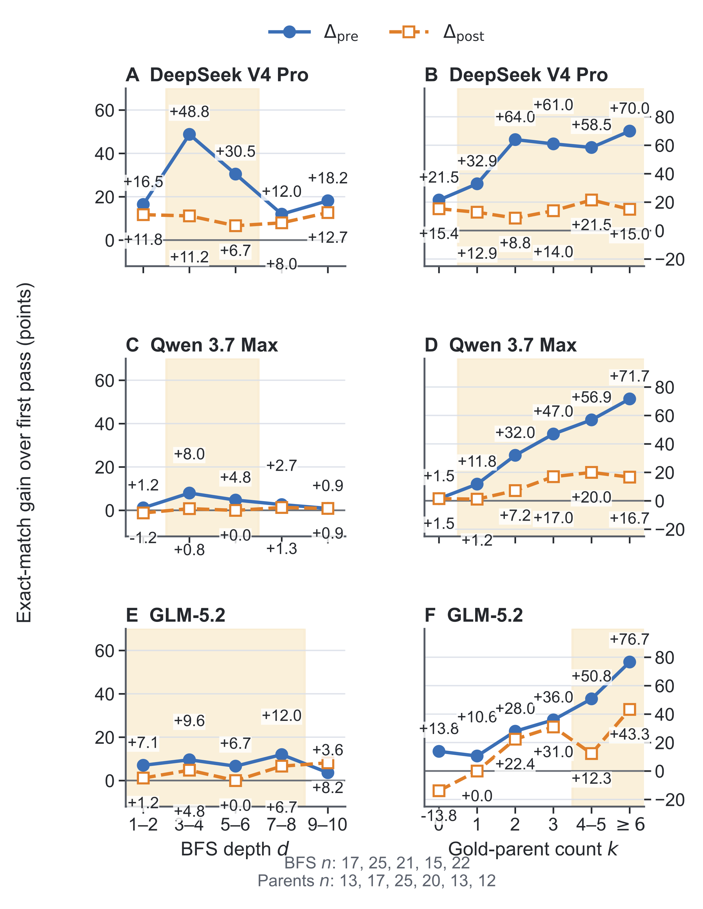
The prefix-minus-postfix exact-match gap in Figure 3 is concentrated in particular bins. DeepSeek V4 Pro has its largest BFS timing gaps at d = 3–6, and Qwen 3.7 Max has a smaller concentration in the same range. GLM-5.2 has positive gaps through d = 8 and a reversal in the final pooled bin. The Parents profiles differ. trace as state is never below trace append in the plotted exact-match bins, with a tie for Qwen 3.7 Max at k = 0. Qwen's separation grows with k; DeepSeek V4 Pro and GLM-5.2 are nonmonotonic but have large gaps in selected middle or high-k bins.
图 3 中前缀相对后缀的精确匹配差距集中在特定桶。DeepSeek V4 Pro 的 BFS 时机差距在 d = 3–6 最大；Qwen 3.7 Max 在同一范围有较小的集中。GLM-5.2 到 d = 8 为止差距为正，并在最后一个合并桶出现反转。Parents 的剖面不同：在绘出的精确匹配桶中，trace as state 从不低于 trace append，仅 Qwen 3.7 Max 在 k = 0 处打平。Qwen 的分离随 k 增大；DeepSeek V4 Pro 与 GLM-5.2 非单调，但在部分中间或高 k 桶有较大差距。
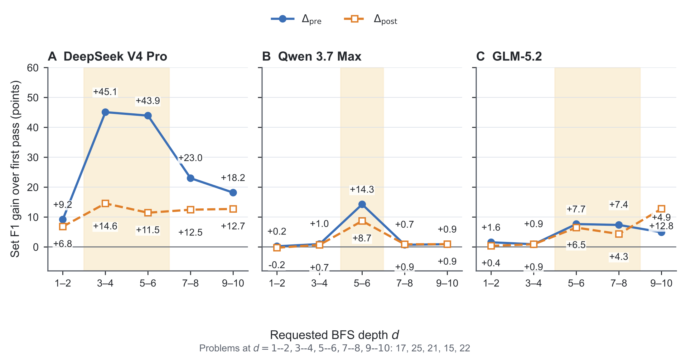
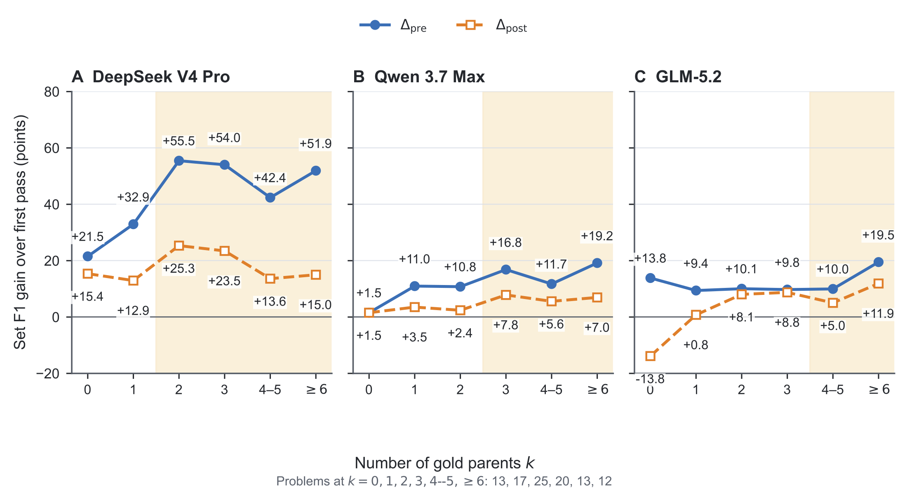
The binned set F1 means preserve the strong DeepSeek V4 Pro BFS pattern, while Qwen 3.7 Max and GLM-5.2 show smaller or more localized separation. Parents generally favors trace as state, with substantial variation in the size of the gap. These profiles document heterogeneity but do not establish why it occurs or that depth or parent-set size mediates trace reuse. A confirmatory follow-up would define bins or continuous contrasts before observing timing outcomes and evaluate them on held-out problems.
分桶集合 F1 均值保留了 DeepSeek V4 Pro 在 BFS 上的强模式，而 Qwen 3.7 Max 与 GLM-5.2 的分离较小或更局部。Parents 总体上偏向 trace as state，但差距大小变化明显。这些剖面记录了异质性，但既没有确立其发生原因，也没有确立深度或父节点集大小中介了痕迹复用。验证性后续研究应在观察时机结果之前定义桶或连续对比，并在留出题上评估。
Appendix E Confidence Intervals附录 E 置信区间
This appendix reports paired uncertainty for the principal same-T timing contrast and cell-wise uncertainty for the broader results and ablations. Table 5 reports the mean paired trace as state minus trace append difference and an unadjusted 95% percentile interval after averaging the five repeats within each problem. The intervals lie fully above zero for 20 of 24 cells. The four intervals that cross zero are DeepSeek V4 Pro MRCRv2 512K EM, Qwen 3.7 Max GraphWalks BFS F1, and GLM-5.2 GraphWalks BFS EM and F1.
本附录报告主要的同 T 时机对比的配对不确定性，以及更广泛结果与消融的逐格不确定性。表 5 给出 trace as state 减 trace append 的平均配对差值，以及在每道题内对 5 次重复取平均后的未调整 95% 百分位区间。24 个单元格中有 20 个的区间完全位于零以上。跨越零的四个区间是：DeepSeek V4 Pro 的 MRCRv2 512K EM、Qwen 3.7 Max 的 GraphWalks BFS F1，以及 GLM-5.2 的 GraphWalks BFS EM 与 F1。
Table 5: Paired problem-cluster uncertainty for the strict same-T timing contrast. Δ is Trace as State minus Trace Append in percentage points; brackets give unadjusted 95% percentile intervals over problems after five-repeat averaging (n = 100 per cell; 20,000 resamples; seed 0). GW is GraphWalks 256K and MR is MRCRv2 8-needle. Intervals wholly above zero are bold.表 5：严格同 T 时机对比的按题目聚类配对不确定性。Δ 为 Trace as State 减 Trace Append（百分点）；方括号内为题目层面、经 5 次重复平均后的未调整 95% 百分位区间（每格 n = 100；20,000 次重抽样；种子 0）。GW 指 GraphWalks 256K，MR 指 MRCRv2 8-needle。完全位于零以上的区间以粗体显示。
| 模型 Model | 单元格 Cell | Δ [95% CI]（百分点） |
|---|---|---|
| DeepSeek V4 Pro | GW BFS EM | +17.00 [+11.00,+23.40] |
| GW BFS F1 | +17.63 [+11.65,+23.97] | |
| GW Par. EM | +38.80 [+31.60,+46.20] | |
| GW Par. F1 | +26.02 [+20.52,+31.84] | |
| MR 256K EM | +10.20 [+4.80,+15.80] | |
| MR 256K Seq. | +9.11 [+4.77,+13.93] | |
| MR 512K EM | +3.20 [−2.60,+9.40] | |
| MR 512K Seq. | +6.35 [+1.69,+11.36] | |
| Qwen 3.7 Max | GW BFS EM | +3.40 [+1.00,+6.40] |
| GW BFS F1 | +1.29 [−0.56,+3.90] | |
| GW Par. EM | +25.40 [+17.60,+33.60] | |
| GW Par. F1 | +7.43 [+4.63,+10.58] | |
| MR 256K EM | +4.40 [+1.40,+8.00] | |
| MR 256K Seq. | +4.19 [+1.41,+7.53] | |
| MR 512K EM | +6.40 [+1.80,+11.40] | |
| MR 512K Seq. | +5.11 [+0.67,+9.84] | |
| GLM-5.2 | GW BFS EM | +3.40 [−1.00,+7.80] |
| GW BFS F1 | −0.83 [−3.94,+1.62] | |
| GW Par. EM | +16.80 [+10.40,+23.80] | |
| GW Par. F1 | +7.32 [+3.93,+11.30] | |
| MR 256K EM | +21.20 [+14.40,+28.20] | |
| MR 256K Seq. | +13.56 [+8.33,+19.34] | |
| MR 512K EM | +10.80 [+3.40,+18.20] | |
| MR 512K Seq. | +10.20 [+4.65,+16.08] |
Figures 5 and 6 report cell means with 95% percentile intervals from the same problem-cluster bootstrap. Repeats are averaged within each problem. Figure 5 covers the strict same-T GraphWalks and MRCRv2 comparisons in Table 2, together with the supporting NUB-1M results. The NUB-1M intervals are wider, consistent with its 20 evaluated questions. Figure 6 covers the GraphWalks control ablation. The same bootstrap procedure produces the shaded trace-count intervals in Figure 2.
图 5 与图 6 报告各单元格均值及来自同一题目聚类自助法的 95% 百分位区间；重复在每道题内取平均。图 5 覆盖表 2 中严格的同 T GraphWalks 与 MRCRv2 比较，以及提供支持的 NUB-1M 结果。NUB-1M 的区间更宽，与其仅 20 道评估题一致。图 6 覆盖 GraphWalks 对照消融。图 2 中带阴影的痕迹数量区间也由同一自助法程序生成。
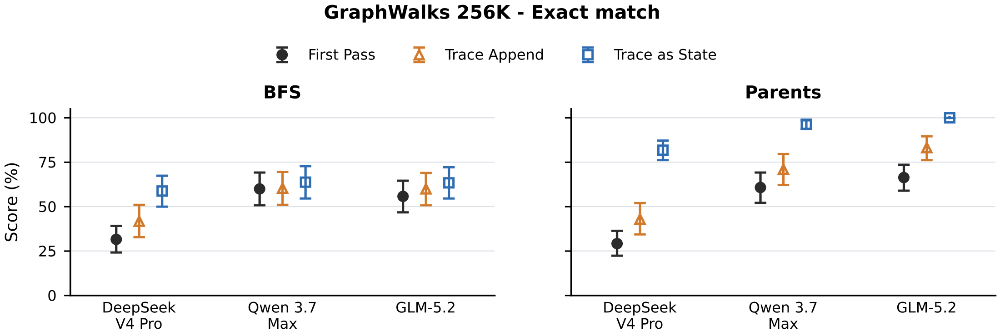
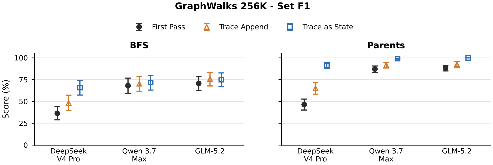
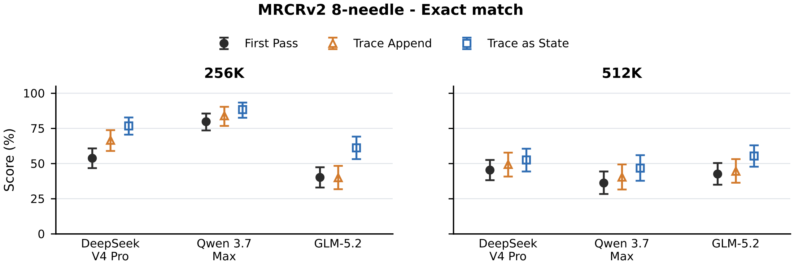
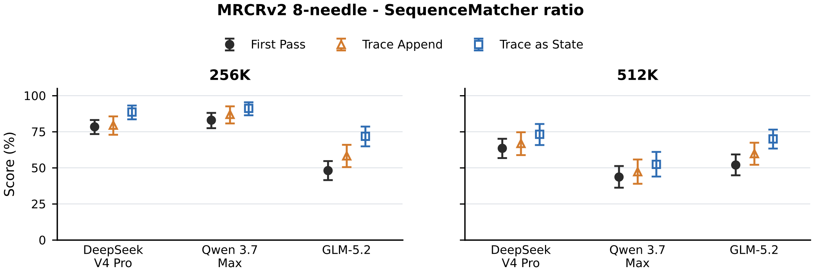
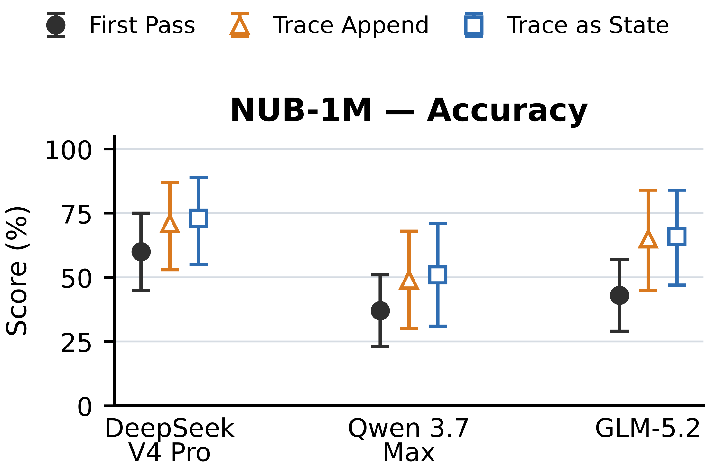
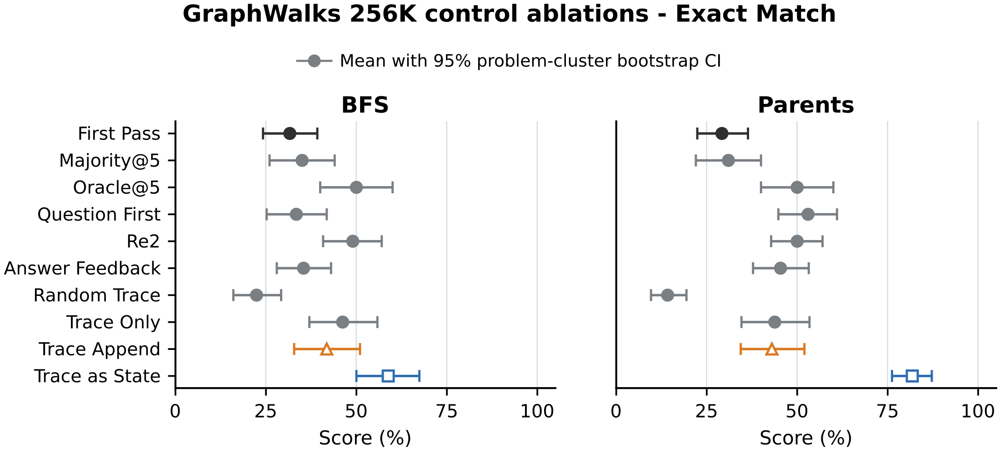
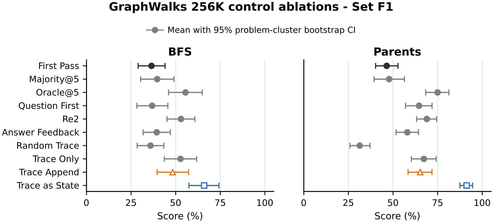
Appendix F Token Usage附录 F Token 用量
Table 6 reports token counts returned by provider APIs for the solver calls underlying the main results.
表 6 报告提供商 API 返回的、支撑主要结果的求解调用 token 计数。
For each retained response with provider-reported usage, we report cached input, missed input, and output tokens. Missed input is total input minus cached input. Reasoning tokens are included in the output.
对每条保留的、含提供商用量上报的响应，我们报告缓存输入、未命中输入与输出 token。未命中输入为总输入减去缓存输入。推理 token 计入输出。
First Pass is the shared source pass used to construct T. For trace as state and trace append, we also report the Total tokens columns that add the corresponding First Pass counts component-wise.
First Pass 是用于构造 T 的共享源遍。对 trace as state 与 trace append，我们还报告 Total tokens 列，即逐项加上对应 First Pass 计数的结果。
Table 6: Provider-reported token usage for main-result inference, in millions. Tokens reports the pass named in each row. For trace append and trace as state, Total tokens adds First Pass component-wise; those columns are blank for First Pass itself. Missed input is total input minus cached input.表 6：主要结果推理的提供商上报 token 用量（百万）。Tokens 列报告该行所指遍次；对 trace append 与 trace as state，Total tokens 为逐项加上 First Pass；First Pass 行的相应列为空。未命中输入为总输入减去缓存输入。
| 基准 Benchmark | 条件 Condition | Tokens（本次遍） | Total tokens（含首遍） | ||||
|---|---|---|---|---|---|---|---|
| 缓存 | 未命中 | 输出 | 缓存 | 未命中 | 输出 | ||
| Cached input | Missed input | Output | Cached input | Missed input | Output | ||
| DeepSeek V4 Pro — GraphWalks 256K | First Pass | 206.766 | 51.092 | 62.507 | |||
| trace append | 271.017 | 68.554 | 35.231 | 477.783 | 119.646 | 97.738 | |
| trace as state | 277.074 | 62.501 | 27.975 | 483.840 | 113.593 | 90.482 | |
| DeepSeek V4 Pro — MRCRv2 256K | First Pass | 50.817 | 46.961 | 1.149 | |||
| trace append | 79.982 | 20.820 | 0.690 | 130.799 | 67.782 | 1.839 | |
| trace as state | 51.875 | 50.051 | 1.355 | 102.692 | 97.012 | 2.504 | |
| DeepSeek V4 Pro — MRCRv2 512K | First Pass | 155.283 | 38.195 | 0.989 | |||
| trace append | 178.675 | 18.526 | 0.702 | 333.958 | 56.721 | 1.691 | |
| trace as state | 157.261 | 39.940 | 1.241 | 312.544 | 78.135 | 2.230 | |
| DeepSeek V4 Pro — NUB-1M Season 2 | First Pass | 31.651 | 8.418 | 0.817 | |||
| trace append | 39.589 | 4.460 | 0.184 | 71.240 | 12.878 | 1.001 | |
| trace as state | 27.418 | 16.637 | 0.398 | 59.069 | 25.055 | 1.215 | |
| Qwen 3.7 Max — GraphWalks 256K | First Pass | 260.213 | 97.483 | 5.402 | |||
| trace append | 264.906 | 117.866 | 2.865 | 525.119 | 215.350 | 8.267 | |
| trace as state | 271.742 | 111.030 | 3.615 | 531.955 | 208.514 | 9.017 | |
| Qwen 3.7 Max — MRCRv2 256K | First Pass | 38.337 | 63.495 | 2.111 | |||
| trace append | 60.227 | 51.195 | 0.989 | 98.564 | 114.690 | 3.100 | |
| trace as state | 62.213 | 49.209 | 1.397 | 100.550 | 112.704 | 3.508 | |
| Qwen 3.7 Max — MRCRv2 512K† | First Pass | 134.607 | 63.738 | 2.263 | |||
| trace append | 154.827 | 53.489 | 1.211 | 289.434 | 117.226 | 3.474 | |
| trace as state | 153.971 | 54.345 | 1.724 | 288.577 | 118.083 | 3.988 | |
| Qwen 3.7 Max — NUB-1M Season 2 | First Pass | 34.253 | 7.547 | 0.489 | |||
| trace append | 38.184 | 5.773 | 0.253 | 72.437 | 13.320 | 0.742 | |
| trace as state | 32.414 | 11.549 | 0.419 | 66.667 | 19.096 | 0.908 | |
| GLM-5.2 — GraphWalks 256K | First Pass | 134.748 | 150.760 | 19.463 | |||
| trace append | 55.612 | 265.396 | 9.127 | 190.361 | 416.156 | 28.591 | |
| trace as state | 64.390 | 256.618 | 16.491 | 199.138 | 407.377 | 35.954 | |
| GLM-5.2 — MRCRv2 256K | First Pass | 73.782 | 24.718 | 1.891 | |||
| trace append | 82.413 | 20.940 | 2.518 | 156.195 | 45.658 | 4.409 | |
| trace as state | 82.464 | 20.888 | 1.516 | 156.246 | 45.606 | 3.407 | |
| GLM-5.2 — MRCRv2 512K | First Pass | 151.247 | 42.262 | 1.441 | |||
| trace append | 157.740 | 40.508 | 2.002 | 308.987 | 82.770 | 3.443 | |
| trace as state | 157.458 | 40.790 | 1.648 | 308.705 | 83.052 | 3.089 | |
| GLM-5.2 — NUB-1M Season 2 | First Pass | 1.272 | 41.123 | 0.995 | |||
| trace append | 3.840 | 43.087 | 0.484 | 5.111 | 84.209 | 1.478 | |
| trace as state | 0.457 | 46.475 | 0.856 | 1.728 | 87.598 | 1.850 | |
References参考文献
共 39 条参考文献。按照学术惯例，文献条目保留英文原文，不作翻译；完整条目如下（与原文一致）。
下载与原文
中英对照 PDF ↓ Word 版 ↓ 原文 arXiv:2609.02702 ↗
References参考文献（保留英文，共 39 条）
- Aghajohari et al. (2026) M. Aghajohari, K. Chitsaz, A. Kazemnejad, S. Chandar, A. Sordoni, A. Courville, and S. Reddy The markovian thinker: architecture-agnostic linear scaling of reasoning. In The Fourteenth International Conference on Learning Representations, Note: Poster External Links: Link Cited by: §2.
- Alibaba Cloud (2026) Alibaba Cloud qwen3.7-max model information. Note: https://help.aliyun.com/zh/model-studio/qwen3-7-maxOfficial Model Studio documentation. Accessed August 3, 2026 Cited by: §4.1, §4.1.
- Bai et al. (2026) Y. Bai, Q. Dong, T. Jiang, X. Lv, Z. Du, A. Zeng, J. Tang, and J. Li IndexCache: accelerating sparse attention via cross-layer index reuse. In Third Conference on Language Modeling, External Links: Link Cited by: §4.1.
- Chen et al. (2024) X. Chen, R. A. Chi, X. Wang, and D. Zhou Premise order matters in reasoning with large language models. In Proceedings of the 41st International Conference on Machine Learning, Proceedings of Machine Learning Research, Vol. 235, pp. 6596–6620. External Links: Link Cited by: §1.
- DeepSeek-AI (2025a) DeepSeek-AI DeepSeek-R1: incentivizing reasoning capability in LLMs via reinforcement learning. Nature 645, pp. 633–638. External Links: Document Cited by: §1.
- DeepSeek-AI (2025b) DeepSeek-AI DeepSeek-V3.2: pushing the frontier of open large language models. Technical report Technical Report arXiv:2512.02556, DeepSeek-AI. External Links: 2512.02556, Document, Link Cited by: §1, §2, §4.1.
- DeepSeek-AI (2026a) DeepSeek-AI DeepSeek-V4: towards highly efficient million-token context intelligence. Technical report Technical Report arXiv:2606.19348, DeepSeek-AI. External Links: 2606.19348, Document, Link Cited by: §1, §2, §4.1.
- DeepSeek-AI (2026b) DeepSeek-AI Models & pricing. Note: https://api-docs.deepseek.com/quick_start/pricing/Official API documentation. Accessed August 3, 2026 Cited by: §4.1, §4.1.
- Geiping et al. (2025) J. Geiping, S. M. McLeish, N. Jain, J. Kirchenbauer, S. Singh, B. R. Bartoldson, B. Kailkhura, A. Bhatele, and T. Goldstein Scaling up test-time compute with latent reasoning: a recurrent depth approach. In The Thirty-ninth Annual Conference on Neural Information Processing Systems, Cited by: §2.
- GLM-5 Team (2026) GLM-5 Team GLM-5: from vibe coding to agentic engineering. Technical report Technical Report arXiv:2602.15763, Z.ai and Tsinghua University. External Links: 2602.15763, Document, Link Cited by: §4.1.
- Hao et al. (2026) Y. Hao, L. Chen, A. Emami, and J. C. Ho Reasoning traces shape outputs but models won’t say so. In Proceedings of the 64th Annual Meeting of the Association for Computational Linguistics (Volume 1: Long Papers), San Diego, California, United States, pp. 42852–42878. External Links: Document, Link Cited by: §2.
- Hsieh et al. (2024) C. Hsieh, S. Sun, S. Kriman, S. Acharya, D. Rekesh, F. Jia, Y. Zhang, and B. Ginsburg RULER: what’s the real context size of your long-context language models?. In First Conference on Language Modeling, Cited by: §2.
- Jeddi et al. (2026) A. Jeddi, M. Ciccone, and B. Taati LoopFormer: elastic-depth looped transformers for latent reasoning via shortcut modulation. In The Fourteenth International Conference on Learning Representations, Cited by: §2.
- Kuratov et al. (2024) Y. Kuratov, A. Bulatov, P. Anokhin, I. Rodkin, D. Sorokin, A. Sorokin, and M. Burtsev BABILong: testing the limits of LLMs with long context reasoning-in-a-haystack. In Advances in Neural Information Processing Systems, Vol. 37. Note: Datasets and Benchmarks Track External Links: Document, Link Cited by: §2.
- Lee et al. (2025) C. Lee, A. M. Rush, and K. Vafa Critical thinking: which kinds of complexity govern optimal reasoning length?. In Proceedings of the 14th International Joint Conference on Natural Language Processing and the 4th Conference of the Asia-Pacific Chapter of the Association for Computational Linguistics, External Links: Document Cited by: §1.
- Lepori et al. (2025) M. A. Lepori, M. C. Mozer, and A. Ghandeharioun Racing thoughts: explaining contextualization errors in large language models. In Proceedings of the 2025 Conference of the Nations of the Americas Chapter of the Association for Computational Linguistics: Human Language Technologies (Volume 1: Long Papers), Albuquerque, New Mexico, pp. 3020–3036. External Links: Document, Link Cited by: §2.
- Levy et al. (2025) M. Levy, Z. Elyoseph, S. Ravfogel, and Y. Goldberg State over tokens: characterizing the role of reasoning tokens. External Links: 2512.12777, Link Cited by: §1, §2.
- Liu et al. (2024) N. F. Liu, K. Lin, J. Hewitt, A. Paranjape, M. Bevilacqua, F. Petroni, and P. Liang Lost in the middle: how language models use long contexts. Transactions of the Association for Computational Linguistics 12, pp. 157–173. External Links: Document, Link Cited by: §2.
- Merrill and Sabharwal (2024) W. Merrill and A. Sabharwal The expressive power of transformers with chain of thought. In The Twelfth International Conference on Learning Representations, Cited by: §1.
- Nie et al. (2025) S. Nie, F. Zhu, Z. You, X. Zhang, J. Ou, J. Hu, J. Zhou, Y. Lin, J. Wen, and C. Li Large language diffusion models. In Advances in Neural Information Processing Systems, Vol. 38, pp. 50608–50646. External Links: Document, Link Cited by: §2.
- Nye et al. (2021) M. Nye, A. J. Andreassen, G. Gur-Ari, H. Michalewski, J. Austin, D. Bieber, D. Dohan, A. Lewkowycz, M. Bosma, D. Luan, C. Sutton, and A. Odena Show your work: scratchpads for intermediate computation with language models. Note: arXiv:2112.00114 Cited by: §1.
- Ok and Lee (2026) H. Ok and J. Lee Lost in the prompt order: revealing the limitations of causal attention in language models. In Findings of the Association for Computational Linguistics: ACL 2026, San Diego, California, United States, pp. 38566–38587. External Links: Document, Link Cited by: §2.
- OpenAI (2025a) OpenAI GraphWalks: a multi hop reasoning long context benchmark. Note: https://huggingface.co/datasets/openai/graphwalksDataset card. Accessed August 3, 2026 Cited by: §4.1.
- OpenAI (2025b) OpenAI OpenAI MRCR: long context multiple needle in a haystack benchmark. Note: https://huggingface.co/datasets/openai/mrcrDataset card. Accessed August 3, 2026 Cited by: §4.1.
- Paul et al. (2024) D. Paul, R. West, A. Bosselut, and B. Faltings Making reasoning matter: measuring and improving faithfulness of chain-of-thought reasoning. In Findings of the Association for Computational Linguistics: EMNLP 2024, Miami, Florida, USA, pp. 15012–15032. External Links: Document, Link Cited by: §2.
- Qiu et al. (2025) Z. Qiu, Z. Wang, B. Zheng, Z. Huang, K. Wen, S. Yang, R. Men, L. Yu, F. Huang, S. Huang, D. Liu, J. Zhou, and J. Lin Gated attention for large language models: non-linearity, sparsity, and attention-sink-free. In Advances in Neural Information Processing Systems, Vol. 38, pp. 110931–110957. External Links: Document, Link Cited by: §4.1.
- Qwen Team (2025a) Qwen Team Qwen3 technical report. Technical report Technical Report arXiv:2505.09388, Alibaba Cloud. External Links: 2505.09388, Document, Link Cited by: §1.
- Qwen Team (2025b) Qwen Team Qwen3-Next-80B-A3B-Instruct model card. Model card Alibaba Cloud. Note: Official model card External Links: Link Cited by: §1, §2.
- Sahoo et al. (2024) S. S. Sahoo, M. Arriola, Y. Schiff, A. Gokaslan, E. Marroquin, J. T. Chiu, A. Rush, and V. Kuleshov Simple and effective masked diffusion language models. In Advances in Neural Information Processing Systems, Vol. 37. External Links: Document, Link Cited by: §2.
- Saunshi et al. (2025) N. Saunshi, N. Dikkala, Z. Li, S. Kumar, and S. J. Reddi Reasoning with latent thoughts: on the power of looped transformers. In The Thirteenth International Conference on Learning Representations, Cited by: §2.
- Vodrahalli et al. (2024) K. Vodrahalli, S. Ontanon, N. Tripuraneni, K. Xu, S. Jain, R. Shivanna, J. Hui, N. Dikkala, M. Kazemi, B. Fatemi, R. Anil, E. Dyer, S. Shakeri, R. Vij, H. Mehta, V. Ramasesh, Q. Le, E. Chi, Y. Lu, O. Firat, A. Lazaridou, J. Lespiau, N. Attaluri, and K. Olszewska Michelangelo: long context evaluations beyond haystacks via latent structure queries. External Links: 2409.12640, Document, Link Cited by: §4.1.
- Wei et al. (2022) J. Wei, X. Wang, D. Schuurmans, M. Bosma, B. Ichter, F. Xia, E. Chi, Q. V. Le, and D. Zhou Chain-of-thought prompting elicits reasoning in large language models. In Advances in Neural Information Processing Systems, Vol. 35, pp. 24824–24837. Cited by: §1.
- Xu et al. (2024) X. Xu, C. Tao, T. Shen, C. Xu, H. Xu, G. Long, J. Lou, and S. Ma Re-reading improves reasoning in large language models. In Proceedings of the 2024 Conference on Empirical Methods in Natural Language Processing, Miami, Florida, USA, pp. 15549–15575. External Links: Document, Link Cited by: §2, §4.3, Table 3.
- xz-keg (2026) xz-keg 1M Novel Understanding Bench. Note: https://github.com/xz-keg/Novel-Understanding-BenchProject repository. Accessed August 3, 2026 Cited by: §4.1.
- Yang et al. (2025) S. Yang, J. Kautz, and A. Hatamizadeh Gated delta networks: improving Mamba2 with delta rule. In The Thirteenth International Conference on Learning Representations, Cited by: §1, §2, §4.1.
- Yu et al. (2025) S. Yu, I. Kim, J. Song, S. Lee, J. Park, and S. Yoon Unleashing multi-hop reasoning potential in large language models through repetition of misordered context. In Findings of the Association for Computational Linguistics: NAACL 2025, Albuquerque, New Mexico, pp. 6450–6470. External Links: Document, Link Cited by: §1, §2.
- Z.ai (2026a) Z.ai GLM-5.2 & GLM-5.1 & GLM-5. Note: https://github.com/zai-org/GLM-5Official GLM-5 series repository. Accessed August 3, 2026 Cited by: §4.1.
- Z.ai (2026b) Z.ai GLM-5.2. Note: https://docs.bigmodel.cn/cn/guide/models/text/glm-5.2Official model documentation. Accessed August 3, 2026 Cited by: §4.1, §4.1.
- Zhao et al. (2026) Y. Zhao, R. Qiu, T. Wei, Y. Bei, Z. Liu, L. Chen, I. Lourentzou, H. Tong, and J. He ReContext: recursive evidence replay as LLM harness for long-context reasoning. External Links: 2607.02509, Link Cited by: §2.